GDPval: Evaluating AI Model Performance on Real-World Economically Valuable Tasks
GDPval：真实经济价值任务上的模型评测
44 职业/9 行业/1320 项专家任务（金集 220），专家盲评为主；2026 年被 GPT-5.4（83.0% wins or ties）、GPT-5.5（84.9%）持续刷新。
翻译范围：正文全部段落走三步精翻（直译→反思→雅化）；脚注与参考文献不译；公式、数字、模型名、数据集名、引用标记按原文 Unicode 保真；表格还原为可复制文本。
GDPVAL: EVALUATING AI MODEL PERFORMANCE ON REAL-WORLD ECONOMICALLY VALUABLE TASKS
GDPval：评测 AI 模型在真实世界经济价值任务上的表现
Tejal Patwardhan∗ Rachel Dias∗ Elizabeth Proehl∗ Grace Kim∗ Michele Wang∗ Olivia Watkins∗ Sim´on Posada Fishman∗ Marwan Aljubeh∗ Phoebe Thacker∗ Laurance Fauconnet Natalie S. Kim Patrick Chao Samuel Miserendino Gildas Chabot David Li Michael Sharman Alexandra Barr Amelia Glaese Jerry Tworek OpenAI
Tejal Patwardhan∗ Rachel Dias∗ Elizabeth Proehl∗ Grace Kim∗ Michele Wang∗ Olivia Watkins∗ Sim´on Posada Fishman∗ Marwan Aljubeh∗ Phoebe Thacker∗ Laurance Fauconnet Natalie S. Kim Patrick Chao Samuel Miserendino Gildas Chabot David Li Michael Sharman Alexandra Barr Amelia Glaese Jerry Tworek OpenAI
ABSTRACT
摘要
arXiv:2510.04374v1 [cs.LG] 5 Oct 2025
arXiv:2510.04374v1 [cs.LG] 5 Oct 2025
We introduce GDPval, a benchmark evaluating AI model capabilities on real- world economically valuable tasks. GDPval covers the majority of U.S. Bureau of Labor Statistics Work Activities for 44 occupations across the top 9 sectors contributing to U.S. GDP (Gross Domestic Product). Tasks are constructed from the representative work of industry professionals with an average of 14 years of experience. We find that frontier model performance on GDPval is improving roughly linearly over time, and that the current best frontier models are approach- ing industry experts in deliverable quality. We analyze the potential for frontier models, when paired with human oversight, to perform GDPval tasks cheaper and faster than unaided experts. We also demonstrate that increased reasoning effort, increased task context, and increased scaffolding improves model performance on GDPval. Finally, we open-source a gold subset of 220 tasks and provide a pub- lic automated grading service at evals.openai.com to facilitate future research in understanding real-world model capabilities.
我们提出 GDPval——一个评测 AI 模型在真实世界经济价值任务上能力的基准。GDPval 覆盖美国劳工统计局界定、对贡献美国 GDP（国内生产总值）最大的 9 个行业中共 44 个职业的大部分工作活动（Work Activities），任务取材于平均拥有 14 年从业经验的行业专业人士的代表性工作成果。我们发现，前沿模型在 GDPval 上的性能随时间大致线性提升，当前最强的前沿模型在交付成果质量上已逼近行业专家。我们分析了前沿模型在人类监督下以更低成本、更快速度完成 GDPval 任务的潜力，并证明提升推理力度、扩充任务上下文与增强脚手架（scaffolding）均能改善模型表现。最后，我们开源了包含 220 个任务的金子集（gold subset），并在 evals.openai.com 上提供公开的自动评分服务，以推动对真实世界模型能力的后续研究。
1INTRODUCTION1 引言
There is growing debate about how increasingly capable AI models could affect the labor market— whether by automating specific tasks, replacing entire occupations, or creating entirely new kinds of work (Brynjolfsson et al., 2025; Chen et al., 2025). Current approaches to measure the economic impact of AI focus on indicators such as adoption rates, usage patterns, and GDP growth attributed to AI (Chatterji et al., 2025; Tamkin et al., 2024; Appel et al., 2025; Acemoglu, 2025; Bick et al., 2024). However, historical evidence from technological shifts—such as electricity, airplanes, and computers—shows that the transition from invention to economy-wide permeation often takes years or even decades, requiring regulatory, cultural, and procedural changes (David, 1990; Brynjolfsson & Hitt, 2000; Brynjolfsson et al., 2017; Dwivedi et al., 2021; Solow, 1987). Therefore, while infor- mative when available, these methods are lagging indicators of AI impacts. We consider an alternate method for understanding the potential economic impacts of AI: directly measuring AI model ca- pabilities. AI capability evaluations can provide clearer, more directly attributable evidence about model abilities, allowing us to assess economic relevance ahead of widespread adoption.
AI 模型能力日益增强，其将如何影响劳动力市场——是自动化特定任务、取代整个职业，还是催生全新的工作类型——正引发越来越多的争论 (Brynjolfsson et al., 2025; Chen et al., 2025)。当前衡量 AI 经济影响的方法聚焦于采用率、使用模式以及归因于 AI 的 GDP 增长等指标 (Chatterji et al., 2025; Tamkin et al., 2024; Appel et al., 2025; Acemoglu, 2025; Bick et al., 2024)。然而，电力、飞机和计算机等技术变革的历史经验表明，从发明到渗透整个经济往往需要数年乃至数十年，并伴随监管、文化与流程层面的调整 (David, 1990; Brynjolfsson & Hitt, 2000; Brynjolfsson et al., 2017; Dwivedi et al., 2021; Solow, 1987)。因此，这类指标虽在可获得时具有参考价值，却属于 AI 影响的滞后指标。我们考虑另一种理解 AI 潜在经济影响的途径：直接测量 AI 模型的能力。AI 能力评测能够提供更清晰、更可直接归因于模型本身的证据，从而在技术被广泛采用之前即可评估其经济相关性。
Our paper introduces the first version of GDPval, a benchmark evaluating AI model performance on real-world economically valuable tasks. GDPval covers the top 9 sectors contributing to U.S. GDP (Gross Domestic Product), with at least 30 tasks per occupation in the full set (and 5 tasks per occupation in the gold subset), across 44 occupations. Each task is constructed based on actual work product created by an expert professional. Given the complexity of automatically grading these tasks, our primary evaluation metric is head-to-head human expert comparison. We also provide an experimental automated grader service for the 220 open-sourced gold subset of tasks. Future GDPval iterations will incorporate greater breadth, realism, interactivity, and contextual nuance.
本文提出首个版本的 GDPval——一个评测 AI 模型在真实世界经济价值任务上表现的基准。GDPval 覆盖对美国 GDP（国内生产总值）贡献最大的 9 个行业、共 44 个职业，全集中每个职业至少 30 个任务（金子集中每个职业 5 个任务）。每个任务均基于专家专业人士的实际工作成果构建。鉴于这些任务难以自动评分，我们以人类专家的两两对比（head-to-head comparison）作为主要评测指标，并针对 220 个开源金子集任务提供实验性的自动评分服务。未来的 GDPval 版本将纳入更广的覆盖面、更强的真实性、交互性与语境细腻度。
The initial version of GDPval offers several advantages over existing AI model evaluations:
GDPval 初始版本相对现有 AI 模型评测具有以下优势：
• Realism: Unlike AI benchmarks in the style of an academic test that focus on reasoning difficulty (e.g., Phan et al. (2025); Hendrycks et al. (2020); Rein et al. (2023); Liu et al.
• 真实性：不同于以学术测验为范式、聚焦推理难度的 AI 基准（例如 Phan et al. (2025); Hendrycks et al. (2020); Rein et al. (2023); Liu et al.
∗Equal contribution. Correspondence to tejal@openai.com.
∗同等贡献。通信邮箱：tejal@openai.com。
1
1
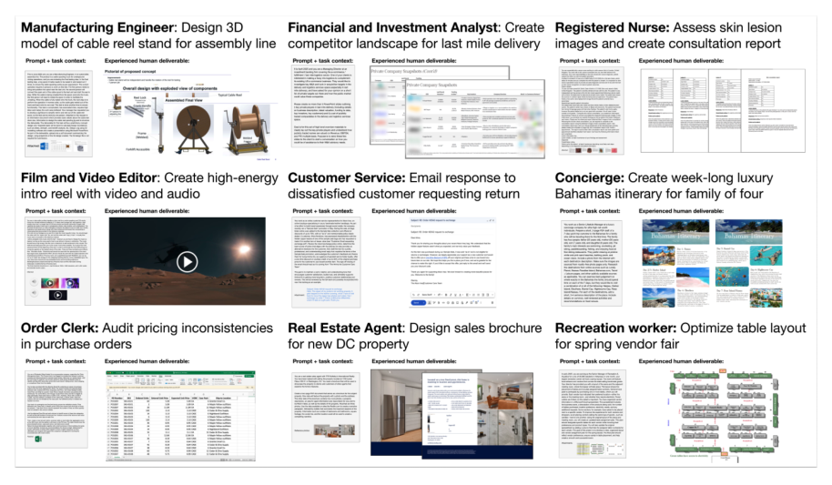
Figure 1: Example GDPval tasks from full set
(2023)), tasks are based on actual work product from industry experts, validated through multiple rounds and review, and tied to time and cost required for completion. • Representative breadth: Unlike AI evaluations focused on specific domains like soft- ware engineering (e.g., Miserendino et al. (2025)), the GDPval full set covers 1,320 tasks across 44 occupations, sourced to cover the majority of Work Activities tracked by O*NET for each occupation U.S. Department of Labor, Employment and Training Administration (2024). This top-down approach allows for representativeness of tasks across occupations. We also build on production AI usage analyses (e.g., Tamkin et al. (2024); Chatterji et al. (2025); Appel et al. (2025)) to cover areas where model adoption is still emerging. • Computer use and multi-modality: Tasks require manipulating a variety of formats (e.g., CAD design files, photos, video, audio, social media posts, diagrams, slide decks, spread- sheets, and customer support conversations). Each task also requires parsing through up to 17 reference files in the gold subset, and 38 in the full set. • Subjectivity: In addition to correctness, expert graders often consider subjective factors such as structure, style, format, aesthetics, and relevance. Our dataset also therefore serves as a helpful testbed to assess automated grader performance. • No “upper limit”: Unlike metrics that could saturate quickly, our primary metric is win rate, which allows for continuous evaluation. Currently, we compare model outputs against a human expert baseline, but we could replace our baseline with increasingly strong models over time and keep evaluating. • Long-horizon difficulty: Tasks require an average of 7 hours of work for an expert pro- fessional to complete. On the high end, tasks span up to multiple weeks of work.
(2023))，本基准的任务取材于行业专家的实际工作成果，经过多轮验证与审查，并与完成所需的时间和成本挂钩。• 代表性广度：不同于聚焦软件工程等特定领域的 AI 评测（例如 Miserendino et al. (2025)），GDPval 全集覆盖 44 个职业共 1,320 个任务，其来源覆盖 O*NET 为每个职业追踪的大部分工作活动 U.S. Department of Labor, Employment and Training Administration (2024)。这种自上而下的选取方式确保了任务在各职业间的代表性。我们还借鉴生产环境中的 AI 使用分析（例如 Tamkin et al. (2024); Chatterji et al. (2025); Appel et al. (2025)），纳入模型采用尚处早期的领域。• 计算机使用与多模态：任务要求操纵多种格式（例如 CAD 设计文件、照片、视频、音频、社交媒体帖子、图表、幻灯片、电子表格与客服对话）；金子集中每个任务最多需解析 17 个参考文件，全集中最多 38 个。• 主观性：除正确性外，专家评分者往往还考虑结构、风格、格式、美观度与相关性等主观因素，因此本数据集也可作为评估自动评分器性能的有用测试平台。• 无“上限”：不同于可能迅速饱和的指标，我们的主要指标是胜率（win rate），可支持持续评测——目前与人类专家基线比较，未来可用越来越强的模型替换基线，持续评测下去。• 长时程难度：完成任务平均需要专家专业人士投入 7 小时，高端任务的工作量长达数周。
2TASK CREATION2 任务构建
We first identify the sectors that contribute most to U.S. GDP, then source tasks drawn from the highest-earning knowledge work occupations within those sectors.
我们首先识别对美国 GDP 贡献最大的行业，再从这些行业中收入最高的知识型职业中采集任务。
2.1PRIORITIZING OCCUPATIONS2.1 职业优先级排序
GDPval covers tasks from 9 sectors and 44 occupations that collectively earn $3T annually. We detail below the methodology behind our initial version.
GDPval 覆盖来自 9 个行业、44 个职业的任务，这些职业合计年收入 3 万亿美元（$3T）。下面详述初始版本的方法。
To choose the initial occupations, we:
初始职业的遴选流程如下：
1. Selected sectors that contribute over 5% to US GDP as determined by Q2 2024 Value Added by Industry as a Percentage of Gross Domestic Product (see Federal Reserve Bank of St. Louis (2025)). These 9 sectors are shown in Table 1.
1. 依据 2024 年第二季度各行业增加值占 GDP 的百分比（见 Federal Reserve Bank of St. Louis (2025)），选取对美国 GDP 贡献超过 5% 的行业。这 9 个行业见表 1。
2
2
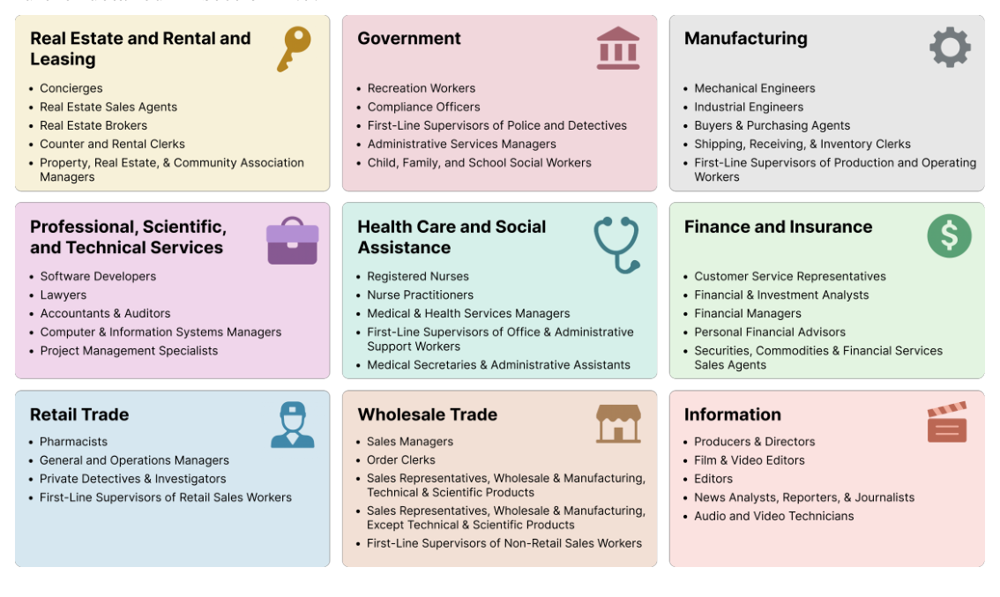
Figure 2: GDPval includes real-world work from 44 occupations.
2. Selected the 5 occupations 1 within each sector that contribute most to total wages and compensation and are predominantly digital. We took a task-based approach to determining if an occupation should be classified as “predominantly digital.” Specifically, we identified all tasks for an occupation from O*NET, a database of occupational data, definitions and tasks from the U.S. Department of Labor. Similar to Eloundou et al. (2023), we prompted GPT-4o to classify each task as digital or non-digital, and then classified the overall occupation as digital if at least 60% of its component tasks were digital. To calcu- late this percentage, we weighted tasks by the “relevance,” “importance,” and “frequency” scores for each task reported in O*NET Task Ratings.
2. 在每个行业中选取对工资与薪酬总额贡献最大、且以数字化为主的 5 个职业 1。判定一个职业是否属于“以数字化为主”时，我们采用基于任务的方法：先从 O*NET（美国劳工部的职业数据、定义与任务数据库）中获取该职业的全部任务；随后参照 Eloundou et al. (2023) 的做法，提示 GPT-4o 将每个任务判定为数字类或非数字类，若某职业至少 60% 的组成任务为数字类，则将其整体归类为数字化职业。计算该比例时，我们按 O*NET Task Ratings 报告的每项任务的“相关性”（relevance）、“重要性”（importance）与“频率”（frequency）分数对任务加权。
We further validated the representativeness of our digital tasks measure by benchmarking it against the Acemoglu & Autor (2011) task content framework. The correlations we observe—digital tasks increasing with non-routine cognitive content and decreasing with routine and manual con- tent—demonstrate alignment with established economic measures of work, as per section A.7.1.
为进一步验证数字化任务度量的代表性，我们将其与 Acemoglu & Autor (2011) 的任务内容框架进行对照。观察到的相关性——数字任务占比随非例行认知内容上升、随例行与手工内容下降——表明该度量与既有的工作经济学度量相一致，详见 A.7.1 节。
For wage and occupation data, we used O*NET’s May 2024 national employment and wage esti- mates to calculate total wages for 831 occupations (U.S. Bureau of Labor Statistics (2025b)) and further detailed in section A.7.
在工资与职业数据方面，我们使用 O*NET 2024 年 5 月的全国就业与工资估计计算 831 个职业的工资总额 (U.S. Bureau of Labor Statistics (2025b))，详见 A.7 节。
2.2EXPERT RECRUITMENT2.2 专家招募
We recruited expert industry professionals to create realistic tasks based on their professional work experience. Experts were required to have a minimum of 4 years of professional experience in their occupation and a strong resume with a demonstrated history of professional recognition, promo- tion, and management responsibilities. The average expert had 14 years of experience. We further required experts to pass a video interview, a background check, a training and a quiz to partici- pate in the project. Experts were well compensated for their time and experience. Some of the prior employers of our industry experts include: Accenture, Aetna, Apple, AXA Advisors, Bank of America, Barclays, BBC News, Boeing, Budget Rent a Car, Capital One, Centers for Disease Control and Prevention, Citigroup, Cond´e Nast, CVS Pharmacy, U.S. Department of Defense, Dis- ney, Douglas Elliman, E*TRADE, Federal Trade Commission, General Electric, Goldman Sachs, Google, Guggenheim Partners, HBO, IBM, JPMorgan Chase, Johnson & Johnson, Kmart, Kirk-
我们招募专家级行业人士，请其基于自身的职业工作经验创建真实任务。专家须在本职业领域拥有至少 4 年专业经验，履历出色，并有获得行业认可、晋升及承担管理职责的可查记录；其平均从业年限为 14 年。此外，专家须通过视频面试、背景调查、培训与测验方可参与项目，其时间与经验均获得充分报酬。我们的行业专家曾任职的部分机构包括：Accenture、Aetna、Apple、AXA Advisors、Bank of America、Barclays、BBC News、Boeing、Budget Rent a Car、Capital One、Centers for Disease Control and Prevention、Citigroup、Cond´e Nast、CVS Pharmacy、U.S. Department of Defense、Disney、Douglas Elliman、E*TRADE、Federal Trade Commission、General Electric、Goldman Sachs、Google、Guggenheim Partners、HBO、IBM、JPMorgan Chase、Johnson & Johnson、Kmart、Kirk-
3
3
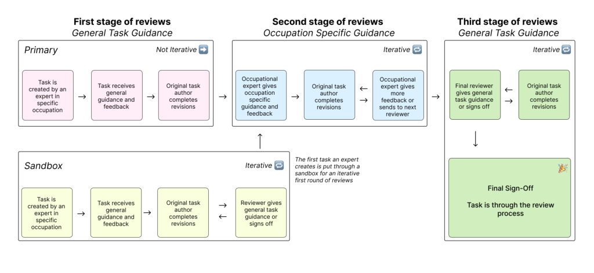
Figure 3: Tasks undergo multiple rounds of review to ensure realism and quality.
land & Ellis LLP, LinkedIn, Lockheed Martin, Macy’s, Massachusetts General Hospital, Meta, Mi- crosoft, Morgan Stanley, National Park Service, NFL Network, Oracle, Paul, Weiss, Rifkind, Whar- ton & Garrison LLP, Prudential, PwC, Raytheon, Sally Beauty, Samsung, SAP, Scientific American, Sotheby’s, Telegraph Media Group, Thermo Fisher Scientific, TIME, Twilio, U.S. Department of Justice, United States Air Force, United States Postal Service, Walgreens, Wells Fargo, White & Case LLP, and Whole Foods.
land & Ellis LLP、LinkedIn、Lockheed Martin、Macy’s、Massachusetts General Hospital、Meta、Microsoft、Morgan Stanley、National Park Service、NFL Network、Oracle、Paul, Weiss, Rifkind, Wharton & Garrison LLP、Prudential、PwC、Raytheon、Sally Beauty、Samsung、SAP、Scientific American、Sotheby’s、Telegraph Media Group、Thermo Fisher Scientific、TIME、Twilio、U.S. Department of Justice、United States Air Force、United States Postal Service、Walgreens、Wells Fargo、White & Case LLP 与 Whole Foods。
2.3TASK CREATION2.3 任务构建
Each GDPval task consists of two primary components: a request (often with reference files) and a deliverable (work product). Experts classified their requests against O*NET occupational tasks for their occupation to ensure broad and representative coverage across tasks (U.S. Bureau of Labor Statistics, 2025a). More details on task characteristics can be found in section A.4. To assess task quality, we asked occupational experts to rate each task on its difficulty, representativeness, time to complete, and overall quality against real-world standards for their occupation. Each task’s dollar value was estimated by multiplying the average estimated completion time by median hourly wages for the corresponding occupation from OEWS data (U.S. Bureau of Labor Statistics, 2025b).
每个 GDPval 任务由两个核心部分组成：请求（通常附带参考文件）与交付成果（工作产品）。专家将各自的请求与其职业的 O*NET 职业任务对照归类，以确保任务覆盖广泛且具代表性 (U.S. Bureau of Labor Statistics, 2025a)。任务特征的更多细节见 A.4 节。为评估任务质量，我们请职业专家就难度、代表性、完成时间以及相对其职业真实世界标准的总体质量对每项任务评分；每项任务的美元价值按“平均估计完成时间 × OEWS 数据中对应职业的中位时薪”估算 (U.S. Bureau of Labor Statistics, 2025b)。
2.4TASK QUALITY CONTROL PIPELINE2.4 任务质量控制流水线
All 1,320 tasks in the full GDPval set went through an iterative review pipeline involving both automated model-based screening and multiple stages of human expert review. Each task received an average of five human reviews (with a minimum of three reviews).
GDPval 全集中的全部 1,320 个任务均经过一条迭代审查流水线，包括基于模型的自动筛选与多阶段人类专家审查；每项任务平均接受五次人工审查（至少三次）。
Across all stages of review, experts provided detailed comments, and tasks were iteratively revised before subsequent reviews to enhance quality and representativeness, as detailed in section A.5.
在各个审查阶段，专家均给出详细意见；任务在进入下一轮审查前迭代修订，以提升质量与代表性，详见 A.5 节。
2.5HUMAN EXPERT GRADING AND AUTOMATED GRADING2.5 人类专家评分与自动评分
To grade the 220 open-sourced gold subset, we conducted blinded expert pairwise comparisons, where experts in the relevant occupation were presented with a request and reference files and asked to rank two or more unlabeled work deliverables.
为给 220 个开源金子集任务评分，我们开展了盲评式专家两两比较：向相关职业的专家展示请求与参考文件，请其为两个或多个未标注身份的工作交付成果排序。
On average, grading each comparison for the gold subset took over an hour. Additional occupational experts were sourced to grade human and model deliverables. Experts provided detailed justifica- tions for their choices and rankings, which enabled us to compute our headline win rates for various models compared to the human expert completion.
金子集的每次比较评分平均耗时超过一小时。我们另行招募职业专家为人类与模型的交付成果评分；专家须为其选择与排序提供详细理由，据此我们计算出各模型相对人类专家完成情况的核心胜率。
For the gold subset, we trained an experimental grading model to perform pairwise comparisons in the style of industry professional experts. Although limited, the automated grader is faster and cheaper than expert grading, and achieves 66% agreement with human expert graders, only 5% below human expert inter-rating agreement of 71%. Further detail is in section A.6.
针对金子集，我们训练了一个实验性评分模型，以行业专业专家的风格执行两两比较。该自动评分器虽能力有限，却比专家评分更快、更廉价，与人类专家评分者的一致率达 66%，仅比人类专家间 71% 的一致率低 5 个百分点。更多细节见 A.6 节。
4
4
Figure 4: GDPval uses pairwise expert comparisons for grading. We also create an experimental automated grader. We find that automated grader agreement is within 5% of human inter-rater agreement on the GDPval gold subset.
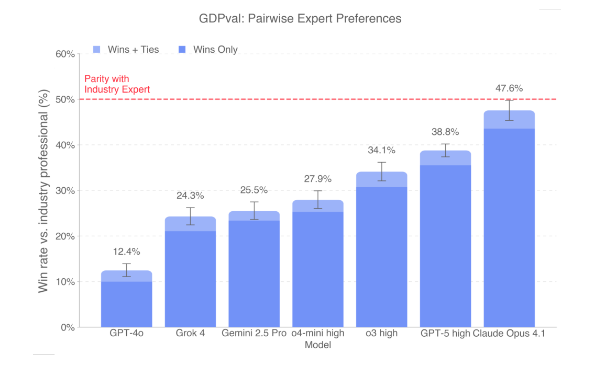
Figure 5: On human pairwise comparisons, models are beginning to approach parity with industry experts on the GDPval gold subset.
3EXPERIMENTS AND RESULTS3 实验与结果
3.1HEADLINE RESULTS3.1 核心结果
We evaluated GPT-4o, o4-mini, o3, GPT-5, Claude Opus 4.1, Gemini 2.5 Pro, and Grok 4 using blind pairwise comparisons by professional industry experts 2. Claude Opus 4.1 was the best performing model on the GDPval gold subset, excelling in particular on aesthetics (e.g., document formatting,
我们采用行业专业专家的盲评两两比较，评测了 GPT-4o、o4-mini、o3、GPT-5、Claude Opus 4.1、Gemini 2.5 Pro 与 Grok 4 2。在 GDPval 金子集上，Claude Opus 4.1 表现最佳，尤其在美学方面（如文档排版、
5
5
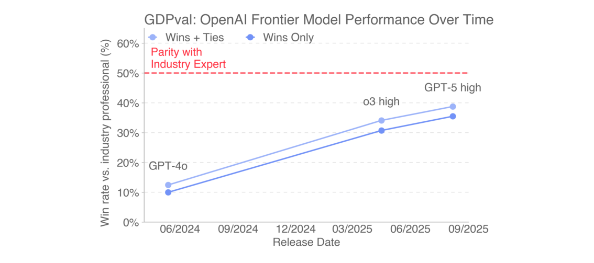
Figure 6: Performance of OpenAI frontier models increased roughly linearly over time on the GDP- val gold subset.
slide layout), while GPT-5 excelled in particular on accuracy (e.g., carefully following instructions, performing correct calculations) as per fig. 8. This distinction is also shown in section A.2.4, where GPT-5 performs better on pure text, while Claude performs better on file types like .pdf, .xslx, and .ppt, demonstrating better visual and aesthetic abilities 3. In fig. 5, on the GDPval gold subset, 47.6% of deliverables by Claude Opus 4.1 were graded as better than (wins) or as good as (ties) the human deliverable. Model deliverables outperformed or matched expert humans’ deliverables in just over half the tasks.
幻灯片版式），而 GPT-5 则在准确性上尤为突出（例如严格遵循指令、执行正确计算），见 fig. 8。这一分化同样体现在 A.2.4 节：GPT-5 在纯文本任务上更胜一筹，Claude 则在 .pdf、.xslx、.ppt 等文件类型上表现更佳，展现出更强的视觉与美学能力 3。如 fig. 5 所示，在 GDPval 金子集上，Claude Opus 4.1 的交付成果有 47.6% 被评为优于（胜出）或不亚于（打平）人类交付成果；在略超过一半的任务中，模型交付成果追平乃至超越了人类专家。
3.2SPEED AND COST COMPARISON3.2 速度与成本对比
We analyzed several scenarios to understand the potential speed and cost savings ratio of frontier models on the GDPval gold subset tasks in section A.2.14. In the scenarios analyzed, incorporating frontier AI models into expert workflows showed the potential to save time and money relative to unaided experts. Fig 7 summarizes expected savings under a “try using the model and if still unsat- isfactory, fix it yourself” setup. Here, an expert human samples from a model, reviews outputs, and if unsatisfactory, resamples and repeats. If no satisfactory output is obtained, the human completes the task themselves. Under this setup, as well as other setups (e.g., directly using model outputs, trying the model just once before doing work directly), model assistance can potentially save the expert time and money.
我们在 A.2.14 节分析了几种情景，以估计前沿模型在 GDPval 金子集任务上潜在的时间与成本节省比例。在所分析的情景中，将前沿 AI 模型纳入专家工作流，相较无辅助专家均展现出节省时间与成本的潜力。Fig 7 概括了“先尝试模型输出、不满意再自行修正”设置下的预期节省：专家先从模型采样并审查输出，不满意则重新采样、循环往复；若始终得不到满意输出，再亲自完成任务。在该设置及其他设置（如直接采用模型输出、动手前仅尝试一次模型）下，模型辅助均有望为专家节省时间与成本。
6
6
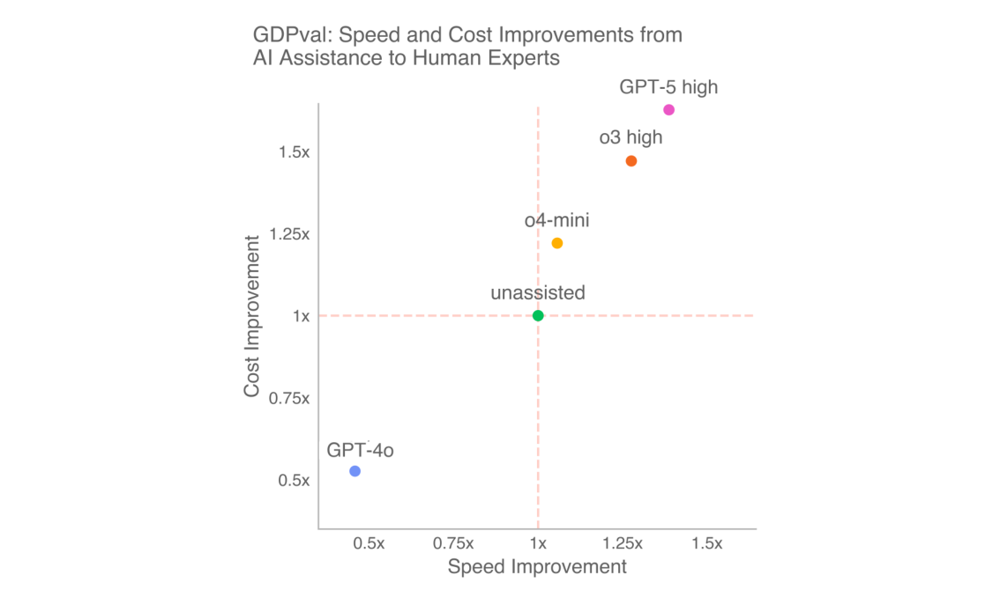
Figure 7: In the scenarios we analyze, models show the potential to save time and money by coupling AI assistance with expert human oversight. Here, we show speed and cost savings from a “try n times, and if still unsatisfactory, fix it yourself” approach as detailed in section A.2.1.
3.3MODEL STRENGTHS AND WEAKNESSES3.3 模型的优势与不足
We built a clustering pipeline to analyze why experts preferred or rejected GPT-5 high, Claude Opus 4.1, Gemini 2.5 Pro, and Grok 4 deliverables as shown in fig. 8.5 Claude, Grok, and Gemini most often lost due to instruction-following failures, while GPT-5 high lost mainly from formatting errors and had the fewest instruction-following issues. Gemini and Grok frequently promised but failed to provide deliverables, ignored reference data, or used the wrong format. GPT-5 and Grok showed the fewest accuracy errors, though all models sometimes hallucinated data or miscalculated.
我们构建了一条聚类流水线，分析专家为何偏好或否决 GPT-5 high、Claude Opus 4.1、Gemini 2.5 Pro 与 Grok 4 的交付成果，如 fig. 8 所示5。Claude、Grok 与 Gemini 最常因指令遵循失败而落败；GPT-5 high 则主要败于格式错误，其指令遵循问题最少。Gemini 与 Grok 常见的问题是承诺交付却未交付、忽略参考数据或格式用错。GPT-5 与 Grok 的准确性错误最少，但所有模型偶尔都会编造数据或计算出错。
3.4INCREASING REASONING EFFORT AND SCAFFOLDING3.4 提升推理力度与脚手架
To understand the impact of reasoning effort on model performance, we ran GDPval on the o3 and GPT-5 models at low, medium, and high reasoning effort. We found that additional reasoning effort improved performance.
为考察推理力度对模型性能的影响，我们在低、中、高三档推理力度下对 o3 与 GPT-5 运行 GDPval，发现更高的推理力度带来更好的性能。
We were also interested in measuring how easily we could improve model capabilities with prompts. For example, many of the observed GPT-5 failure modes were due to obvious formatting errors. We created a prompt which encouraged GPT-5 to rigorously check deliverables for correctness, check layouts by rendering files as images, avoid nonstandard unicode characters, and avoid excess verbosity. The prompt applies generally to multimodal economic tasks and is not overfit to any given question (see section A.3 for details). We also improved agent scaffolding by enabling GET requests in the container and performing best-of-N sampling with N=4 and a GPT-5 judge.
我们还关心：仅靠提示词能在多大程度上提升模型能力。以 GPT-5 为例，其许多失败模式源于显而易见的格式错误。为此我们设计了一段提示词，引导 GPT-5 严格核验交付成果的正确性、将文件渲染为图像以检查版式、避免非标准 unicode 字符并避免过度冗长。该提示词对所有多模态经济任务通用，未对任何具体题目过拟合（详见 A.3 节）。此外，我们通过在容器中启用 GET 请求、以 N=4 做 best-of-N 采样并用 GPT-5 担任评判，改进了智能体脚手架。
Prompting fully eliminated black-square artifacts from GPT-5 responses, which previously affected over half of generated PDFs, and reduced egregious formatting errors in PowerPoint files from 86% to 64%. This can be partially attributed to a sharp increase in agents using their multi-modal capabilities to inspect deliverables (15% →97%). Prompting also improved human preference win rates by 5 percentage points in Figure 9b. These easy performance gains suggest there are paths to agent improvement on GDPval tasks by training or scaffolding them to be more thorough and take full advantage of their multimodal capabilities.
提示词完全消除了 GPT-5 响应中的黑方块伪影——此前逾半数生成的 PDF 受此影响——并将 PowerPoint 文件中的严重格式错误从 86% 降至 64%。这部分归因于主动调用多模态能力检查交付成果的智能体比例大幅上升（15% →97%）。如图 Figure 9b 所示，提示词还将人类偏好胜率提升了 5 个百分点。这些唾手可得的性能增益表明：通过训练或脚手架促使智能体更细致、并充分利用其多模态能力，是改进其在 GDPval 任务上表现的可行路径。
7
7
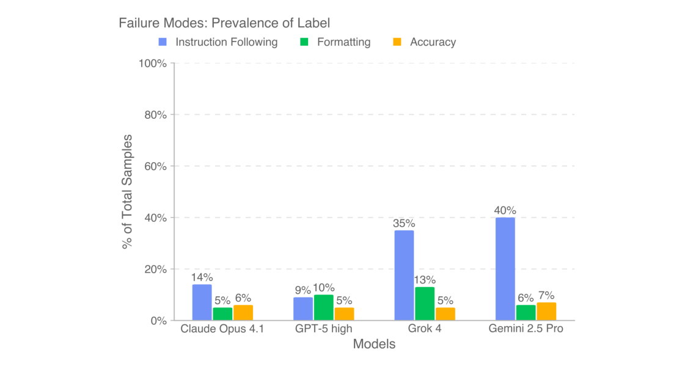
Figure 8: Across models, experts most often preferred the human deliverable because models failed to fully follow instructions on GDPval tasks.
Figure 9: Model performance improves predictably with increasing reasoning effort. Prompt-tuning and scaffolding improvements also increase GPT-5 performance.
4OPEN-SOURCING4 开源
We open-source the prompts and reference files in our 220-task gold subset. While human expert comparison is still our recommended method of grading, we make an experimental automated grader publicly available at evals.openai.com. Please note that the tasks in the open sourced set have been scrubbed of information that could be used to identify the expert who wrote the task. We also note that, as a result of limitations with our automated grader, we don’t provide automated grading results for all tasks in the gold subset. Further disclaimers about the open source gold subset are in section A.1.3.
我们开源了 220 个任务金子集的提示词与参考文件。人类专家比较仍是我们推荐的评分方法；与此同时，我们在 evals.openai.com 公开提供了一款实验性自动评分器。请注意，开源集合中的任务已抹去可用于识别任务撰写专家的信息。另需说明，受自动评分器能力所限，我们未对金子集中的全部任务提供自动评分结果。关于开源金子集的更多免责声明见 A.1.3 节。
8
8
5LIMITATIONS5 局限性
Dataset size: The GDPval full set currently consists of only 44 occupations and 30 total tasks per occupation. It is therefore a limited, initial cut of knowledge work tasks, not a comprehensive evaluation of all possible occupational tasks. We are expanding the dataset size.
数据集规模：GDPval 全集目前仅含 44 个职业、每个职业共 30 个任务，因此只是对知识型工作的一个有限的初步切面，而非对所有职业任务的全面评测。我们正在扩充数据集规模。
Focus on self-contained knowledge work: Tasks in the initial version of GDPval are oriented around knowledge work that can be performed on a computer, particularly around digital deliver- ables. Manual labor and physical tasks are not included in the current version. Moreover, tasks that involve extensive tacit knowledge, access to personally identifiable information, use of proprietary software tools, or communication between individuals are out of scope for the current evaluation. We aim to build on this in future versions of the evaluation.
聚焦自包含的知识型工作：GDPval 初始版本的任务围绕可在计算机上完成的知识型工作展开，尤其是数字交付成果；当前版本不包含体力劳动与物理任务。此外，涉及大量隐性知识、接触个人身份信息、使用专有软件工具或需要人际沟通的任务，均不在本次评测范围之内。我们将在后续版本中逐步弥补这些缺口。
Tasks are precisely-specified and one-shot, not interactive: For GDPval, we provide the full context of the task in the prompt, but in real life it often takes effort to figure out the full context of a task and understand what to work on. We are working on improvements to GDPval that involve more interactivity and contextual realism. In the meantime, the experiment in the “Under-contextualized GDPval” section (section A.2.7) demonstrates how model performance degrades with less context.
任务被精确规定且一次性给出，而非交互式：GDPval 在提示中直接给出任务的完整上下文；而在现实中，厘清任务的完整语境、明确该做什么，本身往往就需要投入精力。我们正致力于让 GDPval 具备更强的交互性与语境真实性。在此之前，“语境不足的 GDPval”实验（A.2.7 节）已展示了上下文减少时模型性能的衰减。
Grader performance: Our current automated grader has a number of limitations compared to human expert graders. More details about the automated grader are available in the section A.6.2.
评分器性能：相较人类专家评分者，我们当前的自动评分器存在若干局限，详见 A.6.2 节。
Cost: Constructing and running our evaluation is expensive, particularly with industry expert graders. For this reason, we make an automated grader proxy available, but do not consider it a full substitute for industry expert graders.
成本：本评测的构建与运行成本高昂，行业专家评分环节尤甚。因此我们提供了自动评分器作为替代，但并不认为它能完全取代行业专家评分。
6CONCLUSION6 结论
In GDPval, we contribute the following:
GDPval 的贡献如下：
1. Dataset: We create a new evaluation dataset (GDPval) measuring real-world, economically valuable tasks. 2. Capability benchmarking: We analyze quality, speed and cost of deliverables across hu- man industry experts and frontier AI models. 3. Experiments: We test how results shift with differing reasoning effort, prompting, scaf- folding, and context. 4. Open-sourcing: We open-source 220 tasks as part of our gold subset which includes prompts and reference files. 5. Automated grader: We release an automated grader to improve accessibility of grading at evals.openai.com.
1. 数据集：构建了衡量真实世界经济价值任务的新评测数据集 GDPval。2. 能力基准测试：对比分析了人类行业专家与前沿 AI 模型交付成果的质量、速度与成本。3. 实验：检验了结果如何随推理力度、提示词、脚手架与上下文而变化。4. 开源：开源了金子集中的 220 个任务，含提示词与参考文件。5. 自动评分器：在 evals.openai.com 发布自动评分器，降低评分门槛。
We hope this work contributes to the science of tracking model progress, so that we have better data to assess the social impacts of AI models.
我们希望这项工作能推动模型进展追踪的科学化，为评估 AI 模型的社会影响提供更可靠的数据。
ACKNOWLEDGEMENTS致谢
We thank Abhishek Bhardwaj, Addea Gupta, AJ Ostrow, Aleksander Madry, Alexander Wei, Ally Bennett, Becky Waite, Ben Gaffney, Brad Lightcap, Casey Chu, Cassandra Duchan Solis, Char- lotte Cole, Dane Stuckey, Eric Wallace, Erik Ritter, Evan Mays, Fidji Simo, Gideon Myles, Han- nah Wong, Isa Fulford, Jakub Pachocki, James Lennon, Jared Pochtar, Jason Kwon, Jordan Frand, Julie Steele, Justin Wang, Kai Chen, Karthik Rangarajan, Kevin Liu, Larry Summers, Leo Liu, Leon Maksin, Leyton Ho, Lindsay McCallum, Livvy Pierce, Manoli Liodakis, Mark Chen, Max Schwarzer, Miles Palley, Miles Wang, Nakul Khanna, Nat McAleese, Natalie Kim, Nicholas Car- lini, Nick Otis, Nick Ryder, Noam Brown, Noel Bundick, Paul Radulovic, Phillip Guo, Prashanth R, Rachel Brown, Raoul de Liedekerke, Robert Rotsted, Ronnie Chatterji, Ryan Kaufman, Ryan Rot- sted, Sam Altman, Sam Bowman, Sherwin Wu, Tom Cunningham, Tom Stasi, Tony Song, Trevor
We thank Abhishek Bhardwaj, Addea Gupta, AJ Ostrow, Aleksander Madry, Alexander Wei, Ally Bennett, Becky Waite, Ben Gaffney, Brad Lightcap, Casey Chu, Cassandra Duchan Solis, Charlotte Cole, Dane Stuckey, Eric Wallace, Erik Ritter, Evan Mays, Fidji Simo, Gideon Myles, Hannah Wong, Isa Fulford, Jakub Pachocki, James Lennon, Jared Pochtar, Jason Kwon, Jordan Frand, Julie Steele, Justin Wang, Kai Chen, Karthik Rangarajan, Kevin Liu, Larry Summers, Leo Liu, Leon Maksin, Leyton Ho, Lindsay McCallum, Livvy Pierce, Manoli Liodakis, Mark Chen, Max Schwarzer, Miles Palley, Miles Wang, Nakul Khanna, Nat McAleese, Natalie Kim, Nicholas Carlini, Nick Otis, Nick Ryder, Noam Brown, Noel Bundick, Paul Radulovic, Phillip Guo, Prashanth R, Rachel Brown, Raoul de Liedekerke, Robert Rotsted, Ronnie Chatterji, Ryan Kaufman, Ryan Rotsted, Sam Altman, Sam Bowman, Sherwin Wu, Tom Cunningham, Tom Stasi, Tony Song, Trevor
9
9
Creech, Wenda Zhou, Wenlei Xie, Wyatt Thompson, and Yara Khakbaz for discussion, assistance, and review. We are also grateful to our vendor partners for their collaboration and support through- out this research, and extend a special thank you to the industry experts who contributed their time and expertise to GDPval, without whom this work would not have been possible.
Creech、Wenda Zhou、Wenlei Xie、Wyatt Thompson 与 Yara Khakbaz 的讨论、协助与审阅。我们同时感谢在本研究全程给予协作与支持的供应商伙伴，并特别感谢为 GDPval 贡献时间与专业知识的行业专家——没有他们，这项工作无从谈起。
REFERENCES参考文献
Daron Acemoglu. The simple macroeconomics of ai. Economic Policy, 40(121):13–58, 2025.
[REF] 原样保留英文文献列表
Daron Acemoglu and David Autor. Skills, tasks and technologies: Implications for employment and
[REF] 原样保留英文文献列表
earnings. In Handbook of labor economics, volume 4, pp. 1043–1171. Elsevier, 2011.
[REF] 原样保留英文文献列表
Ruth Appel, Peter McCrory, Alex Tamkin, Michael Stern, Miles McCain, and Tyler Neylon. An-
[REF] 原样保留英文文献列表
thropic economic index report: Uneven geographic and enterprise ai adoption. Anthropic Re- search, 2025. URL https://www.anthropic.com/research/anthropic-econo mic-index-september-2025-report.
[REF] 原样保留英文文献列表
Alexander Bick, Adam Blandin, and David J Deming. The rapid adoption of generative ai. Technical
[REF] 原样保留英文文献列表
report, National Bureau of Economic Research, 2024.
[REF] 原样保留英文文献列表
Erik Brynjolfsson and Lorin M. Hitt. Beyond computation: Information technology, organizational
[REF] 原样保留英文文献列表
transformation and business performance. Journal of Economic Perspectives, 14(4):23–48, 2000. doi: 10.1257/jep.14.4.23. URL https://www.aeaweb.org/articles?id=10.1257 /jep.14.4.23.
[REF] 原样保留英文文献列表
Erik Brynjolfsson, Daniel Rock, and Chad Syverson. Artificial intelligence and the modern produc-
[REF] 原样保留英文文献列表
tivity paradox: A clash of expectations and statistics. Working Paper 24001, National Bureau of Economic Research, November 2017. URL http://www.nber.org/papers/w24001.
[REF] 原样保留英文文献列表
Erik Brynjolfsson, Danielle Li, and Lindsey Raymond. Generative ai at work. The Quarterly Journal
[REF] 原样保留英文文献列表
of Economics, 140(2):889–942, 2025.
[REF] 原样保留英文文献列表
Aaron Chatterji, Thomas Cunningham, David J Deming, Zoe Hitzig, Christopher Ong, Carl Yan
[REF] 原样保留英文文献列表
Shan, and Kevin Wadman. How people use chatgpt. Working Paper 34255, National Bureau of Economic Research, September 2025. URL http://www.nber.org/papers/w34255.
[REF] 原样保留英文文献列表
Wilbur Xinyuan Chen, Suraj Srinivasan, and Saleh Zakerinia. Displacement or complementarity?:
[REF] 原样保留英文文献列表
The labor market impact of generative ai. Harvard Business School, 2025.
[REF] 原样保留英文文献列表
Paul A. David. The dynamo and the computer: An historical perspective on the modern productivity
[REF] 原样保留英文文献列表
paradox. American Economic Review, 80(2):355–361, 1990. URL https://econpapers.r epec.org/RePEc:aea:aecrev:v:80:y:1990:i:2:p:355-61.
[REF] 原样保留英文文献列表
Yogesh K Dwivedi, Laurie Hughes, Elvira Ismagilova, Gert Aarts, Crispin Coombs, Tom Crick,
[REF] 原样保留英文文献列表
Yanqing Duan, Rohita Dwivedi, John Edwards, Aled Eirug, et al. Artificial intelligence (ai): Multidisciplinary perspectives on emerging challenges, opportunities, and agenda for research, practice and policy. International journal of information management, 57:101994, 2021.
[REF] 原样保留英文文献列表
Tyna Eloundou, Sam Manning, Pamela Mishkin, and Daniel Rock. Gpts are gpts: An early look at
[REF] 原样保留英文文献列表
the labor market impact potential of large language models, 2023. URL https://arxiv.or g/abs/2303.10130.
[REF] 原样保留英文文献列表
Federal Reserve Bank of St. Louis. Value added by industry as a percentage of gross domestic
[REF] 原样保留英文文献列表
product. FRED Release Tables, 2025. URL https://fred.stlouisfed.org/releas e/tables?rid=331&eid=211. Accessed: 2025-09-03.
[REF] 原样保留英文文献列表
Dan Hendrycks, Collin Burns, Steven Basart, Andy Zou, Mantas Mazeika, Dawn Song, and
[REF] 原样保留英文文献列表
Jacob Steinhardt. Measuring massive multitask language understanding. arXiv preprint arXiv:2009.03300, 2020. doi: 10.48550/arXiv.2009.03300. URL https://arxiv.or g/abs/2009.03300.
[REF] 原样保留英文文献列表
10
10
Xiao Liu, Hao Yu, Hanchen Zhang, Yifan Xu, Xuanyu Lei, Hanyu Lai, Yu Gu, Hangliang Ding,
[REF] 原样保留英文文献列表
Kaiwen Men, Kejuan Yang, Shudan Zhang, Xiang Deng, Aohan Zeng, Zhengxiao Du, Chenhui Zhang, Sheng Shen, Tianjun Zhang, Yu Su, Huan Sun, Minlie Huang, Yuxiao Dong, and Jie Tang. Agentbench: Evaluating llms as agents. arXiv preprint arXiv:2308.03688, 2023. doi: 10.48550/arXiv.2308.03688.
[REF] 原样保留英文文献列表
Samuel Miserendino, Michele Wang, Tejal Patwardhan, and Johannes Heidecke. Swe-lancer: Can
[REF] 原样保留英文文献列表
frontier LLMs earn $1 million from real-world freelance software engineering? arXiv preprint arXiv:2502.12115, 2025.
[REF] 原样保留英文文献列表
Arjun Panickssery, Samuel R. Bowman, and Shi Feng. Llm evaluators recognize and favor their
[REF] 原样保留英文文献列表
own generations, 2024. URL https://arxiv.org/abs/2404.13076.
[REF] 原样保留英文文献列表
Long Phan et al. Humanity’s last exam. arXiv preprint arXiv:2501.14249, 2025.
[REF] 原样保留英文文献列表
David Rein, Betty Li Hou, Asa Cooper Stickland, Jackson Petty, Richard Yuanzhe Pang, Julien
[REF] 原样保留英文文献列表
Dirani, Julian Michael, and Samuel R. Bowman. GPQA: A graduate-level google-proof q&a benchmark. arXiv preprint arXiv:2311.12022, 2023. doi: 10.48550/arXiv.2311.12022. URL https://arxiv.org/abs/2311.12022.
[REF] 原样保留英文文献列表
Robert M. Solow. We’d better watch out. New York Times Book Review, pp. 36, July 1987. URL
[REF] 原样保留英文文献列表
https://www.standupeconomist.com/pdf/misc/solow-computer-product ivity.pdf.
[REF] 原样保留英文文献列表
Alex Tamkin, Miles McCain, Kunal Handa, Esin Durmus, Liane Lovitt, Ankur Rathi, Saffron
[REF] 原样保留英文文献列表
Huang, Alfred Mountfield, Jerry Hong, Stuart Ritchie, Michael Stern, Brian Clarke, Landon Goldberg, Theodore R. Sumers, Jared Mueller, William McEachen, Wes Mitchell, Shan Carter, Jack Clark, Jared Kaplan, and Deep Ganguli. Clio: Privacy-preserving insights into real-world ai use. arXiv preprint arXiv:2412.13678, 2024. doi: 10.48550/arXiv.2412.13678. URL https://arxiv.org/abs/2412.13678.
[REF] 原样保留英文文献列表
U.S. Bureau of Labor Statistics. Occupational outlook – occupational data. https://www.bls.
[REF] 原样保留英文文献列表
gov/emp/data/occupational-data.htm, 2025a. Accessed: 2025-09-03.
[REF] 原样保留英文文献列表
U.S. Bureau of Labor Statistics. Occupational employment and wage statistics: May 2024 national
[REF] 原样保留英文文献列表
tables. https://www.bls.gov/oes/tables.htm, 2025b. Data reference May 2024; accessed: 2025-09-03.
[REF] 原样保留英文文献列表
U.S. Department of Labor, Employment and Training Administration. Work activities - onet 28.3
[REF] 原样保留英文文献列表
data dictionary. https://www.onetcenter.org/dictionary/28.3/excel/tas k_ratings.html, 2024. Accessed: 2025-04-20.
[REF] 原样保留英文文献列表
AAPPENDIXA 附录
A.1 DISCLOSURESA.1 披露事项
A.1.1 AI DISCLOSUREA.1.1 AI 使用披露
We used AI models to help with our literature review and with tweaking language in the paper. We also used AI coding assistants as part of our regular engineering workflows (e.g., to help find and fix bugs).
我们使用 AI 模型辅助文献综述与论文措辞的打磨，并在常规工程工作流中使用 AI 编程助手（例如协助定位与修复缺陷）。
A.1.2 SENSITIVE CONTENT AND POLITICAL CONTENT DISCLOSUREA.1.2 敏感内容与政治内容披露
Some tasks in GDPval include NSFW content, including themes such as sex, alcohol, vulgar lan- guage, and political content. We chose to keep these tasks as they reflect real themes addressed in various occupations (e.g., film, literature, law, politics). We do not endorse the particular actions or views in any of the content.
GDPval 中的部分任务包含 NSFW 内容，涉及性、酒精、粗俗语言及政治内容等主题。我们选择保留这些任务，因为它们反映了多个职业（如影视、文学、法律、政治）中真实存在的主题。我们不为内容中的任何具体行为或观点背书。
11
11
A.1.3 THIRD-PARTY REFERENCES DISCLOSUREA.1.3 第三方引用披露
GDPval contains limited references to third-party brands and trademarks solely for research and evaluation purposes. No affiliation or endorsement is intended or implied. All trademarks are the property of their respective owners. Some images and videos in this dataset feature AI-generated individuals and real people who have provided permission. Names and identifying references to private individuals in GDPval are fictitious. Any resemblance to actual persons or entities is purely coincidental.
GDPval 有限地提及第三方品牌与商标，仅用于研究与评测目的，不含任何隶属或背书之意；所有商标均归其各自所有者。本数据集中的部分图像与视频包含 AI 生成人物及已获授权的真实人物。GDPval 中私人个体的姓名与身份指涉均为虚构，如有雷同纯属巧合。
A.2 ADDITIONAL DETAIL ON EXPERIMENTAL RESULTSA.2 实验结果补充细节
A.2.1 SPEED AND COST ANALYSIS, CONTINUEDA.2.1 速度与成本分析（续）
We use the following definitions:
我们采用如下定义：
1. Human expert professional completion time HT is the time taken by a human expert profes- sional to complete a task, based on validated self-reported time to complete6. To calculate human expert professional completion cost HC, we multiplied the reported task completion hours per occupation by the median hourly wage for each occupation from the U.S. Bureau of Labor Statistics (2025b)7. On average, on our 220 gold subset HT = 404 minutes and HC = $361. 2. Human expert professional review time RT is an estimate of the time taken to assess a model deliverable by a human expert grader. We observe this from our task monitoring software, averaging the time taken to grade for the first time each human expert was asked to grade that question. On average, RT = 109 minutes, and associated human expert professional review cost RC is on average $86, where RC is again calculated based on time taken multiplied by median wage data. 3. Model completion time MT is the time taken for the model to complete a deliverable and MC is the associated completion cost, based on empirical API speed and cost for the model to complete the deliverable when given a prompt 8. 4. Model win rate w is how often the model deliverable is rated better than the human deliv- erable by the human expert grader.
1. 人类专家完成时间 HT：人类专家完成任务所需的时间，基于经验证的自报完成时间6。计算人类专家完成成本 HC 时，我们将各职业自报的任务完成小时数乘以 U.S. Bureau of Labor Statistics (2025b) 中该职业的中位时薪7。在 220 个金子集任务上，平均 HT = 404 分钟、HC = $361。2. 人类专家审查时间 RT：人类专家评分者评估一个模型交付成果所需时间的估计值，取自任务监控软件，按每位人类专家首次为某题评分所用时间平均而得。平均 RT = 109 分钟，相应的审查成本 RC 平均为 $86，同样按时间乘以中位工资计算。3. 模型完成时间 MT：模型完成交付成果所花的时间；MC 为相应的完成成本，依据模型在给定提示下完成交付成果的实测 API 速度与成本 8。4. 模型胜率 w：模型交付成果被人类专家评分者评为优于人类交付成果的频率。
We then calculate the following ratios:
在此基础上，我们计算以下几类比值：
1. Naive ratio: To measure the ratio of human deliverable versus model deliverable, without accounting for any quality differences or implementation times, we simply divide the aver- age task completion time for a human by the average sampling time for a model: HT /MT , and analogously for cost: HC/MC. 2. Try 1 time, then fix it ratio: To calculate the time with this method, we take the sampling time for the model, add review time RT for an expert to assess quality, and then with probability (1 −wi) add in the human completion time for any fixes needed for that model for a task i , to obtain T1,i and analogously C1,i:
1. 朴素比例：为衡量人类交付成果与模型交付成果之比，且不计任何质量差异或实施时间，我们直接以人类平均任务完成时间除以模型平均采样时间，得 HT /MT；成本同理，为 HC/MC。2. 尝试 1 次后修正比例：按此方法，先取模型采样时间，加上专家评估质量所需的审查时间 RT，再以概率 (1 −wi) 计入人类为修正该模型在任务 i 上输出所需的完成时间，得到 T1,i；成本同理得 C1,i：
E[T1,i] = MT,i + RT,i + (1 −wi)HT,i (1) E[C1,i] = MC,i + RC,i + (1 −wi)HC,i (2)
E[T1,i] = MT,i + RT,i + (1 −wi)HT,i (1) E[C1,i] = MC,i + RC,i + (1 −wi)HC,i (2)
The average time spent is T1 = E[T1,i], marginalizing over all tasks i, similarly with C1. This proxies the setup where a human tries using GPT-5 for a task, assesses its quality, and then does the task themselves if the deliverable quality is below their quality bar. Our plug- in estimate of the time savings ratio is: HT /(MT + RT + (1 −w)HT ) = HT / ˆT1, where we use the empirical mean ˆT1. The analogous cost ratio is HC/(MC + RC + (1 −w)HC).
平均花费时间为 T1 = E[T1,i]，对所有任务 i 取边际，C1 同理。这近似于如下场景：人类尝试用 GPT-5 完成任务并评估质量，若交付成果质量低于自己的标准，则亲自完成。代入估计的时间节省比为 HT /(MT + RT + (1 −w)HT ) = HT / ˆT1（使用经验均值 ˆT1）；成本比同理为 HC/(MC + RC + (1 −w)HC)。
12
12
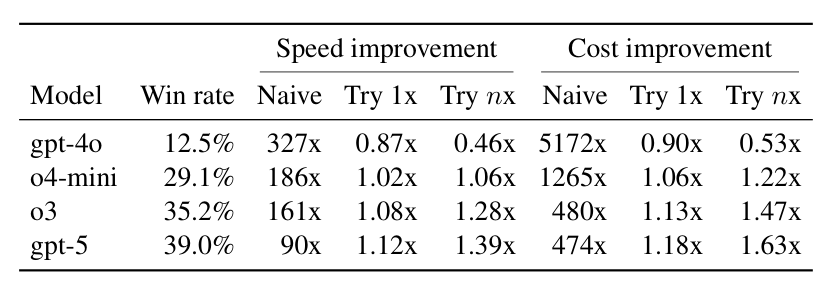
Table 2: Speed and cost improvements under different review strategies.
3. Try n times, then fix it ratio: To calculate the time with this method, we take the sampling time for the model, add review time RT for an expert to assess quality, and then add in the human completion time for any fixes needed for that model (based on 1 −wi) 9. We repeat this across n resamples and re-assess steps before the human steps in to fix it:
3. 尝试 n 次后修正比例：按此方法，先取模型采样时间，加上专家评估质量所需的审查时间 RT，再计入人类为修正该模型输出所需的完成时间（基于 1 −wi）9；在人类出手修正前，上述重采样与重评估过程重复 n 次：
n X
n X
E[Tn,i] =
E[Tn,i] =
(1 −wi) k−1(MT,i + RT,i)
(1 −wi) k−1(MT,i + RT,i)
+ (1 −wi) nHT,i (3)
+ (1 −wi) nHT,i (3)
�
�
= (MT,i + RT,i) 1 −(1 −wi)n
= (MT,i + RT,i) 1 −(1 −wi)n
+ (1 −wi)nHT,i (4)
+ (1 −wi)nHT,i (4)
wi
wi
n X
n X
E[Cn,i] =
E[Cn,i] =
(1 −wi) k−1(MC,i + RC,i)
(1 −wi) k−1(MC,i + RC,i)
+ (1 −wi) nHC,i (5)
+ (1 −wi) nHC,i (5)
�
�
= (MC,i + RC,i) 1 −(1 −wi)n
= (MC,i + RC,i) 1 −(1 −wi)n
+ (1 −wi)nHC,i (6)
+ (1 −wi)nHC,i (6)
wi
wi
This proxies the setup where a human tries n rounds of using GPT-5 for a task, then assesses its quality each time, and then does the task themselves if the model quality is below their quality bar after all attempts. As before, the average time spent is Tn = E[Tn,i], marginal- izing over all tasks i, similarly with Cn. Therefore, as n →∞, with w > 0, the time savings are HT /((MT + RT )/w) times faster and cost savings are HC/((MC + RC)/w) times cheaper than human experts.
这近似于如下场景：人类为一个任务尝试 n 轮 GPT-5 并逐次评估质量，若所有尝试后模型质量仍不达标，则亲自完成。如前所述，平均花费时间为 Tn = E[Tn,i]（对所有任务 i 取边际），Cn 同理。于是当 n →∞ 且 w > 0 时，相比人类专家，时间节省 HT /((MT + RT )/w) 倍、成本节省 HC/((MC + RC)/w) 倍。
Table 2
| Speed | improvement | Cost | improvement | |||
|---|---|---|---|---|---|---|
| Model | Win rate | Naive | Try 1x Try | nx Naive | Try 1x Try | nx |
| gpt-4o | 12.5% | 327x | 0.87x 0.46x | 5172x | 0.90x 0.53x | |
| o4-mini | 29.1% | 186x | 1.02x 1.06x | 1265x | 1.06x 1.22x | |
| o3 | 35.2% | 161x | 1.08x 1.28x | 480x | 1.13x 1.47x | |
| gpt-5 | 39.0% | 90x | 1.12x 1.39x | 474x | 1.18x 1.63x |
When incorporating time to review and redo work, the payoff from using a model shrinks. We do not include consideration of the time taken to review a human professional deliverable, although this would commonly occur for tasks in GDPval (either self-review of the professional’s own work or review by a supervisor of a team member’s work). We also do not include the possibility that the human deliverable is also undesirable. One further limitation of this analysis is that it does not capture the cost of catastrophic mistakes, which can be disproportionately expensive in some domains.
一旦计入审查与返工时间，使用模型的收益便会缩水。我们未考虑审查人类专业交付成果所需的时间——尽管这在 GDPval 任务中十分常见（专业人士自审，或主管审查团队成员的工作）；也未考虑人类交付成果本身可能不合格的情形。本分析还有一点局限：未计入灾难性错误的成本，而这类错误在某些领域的代价可能高得不成比例。
13
13
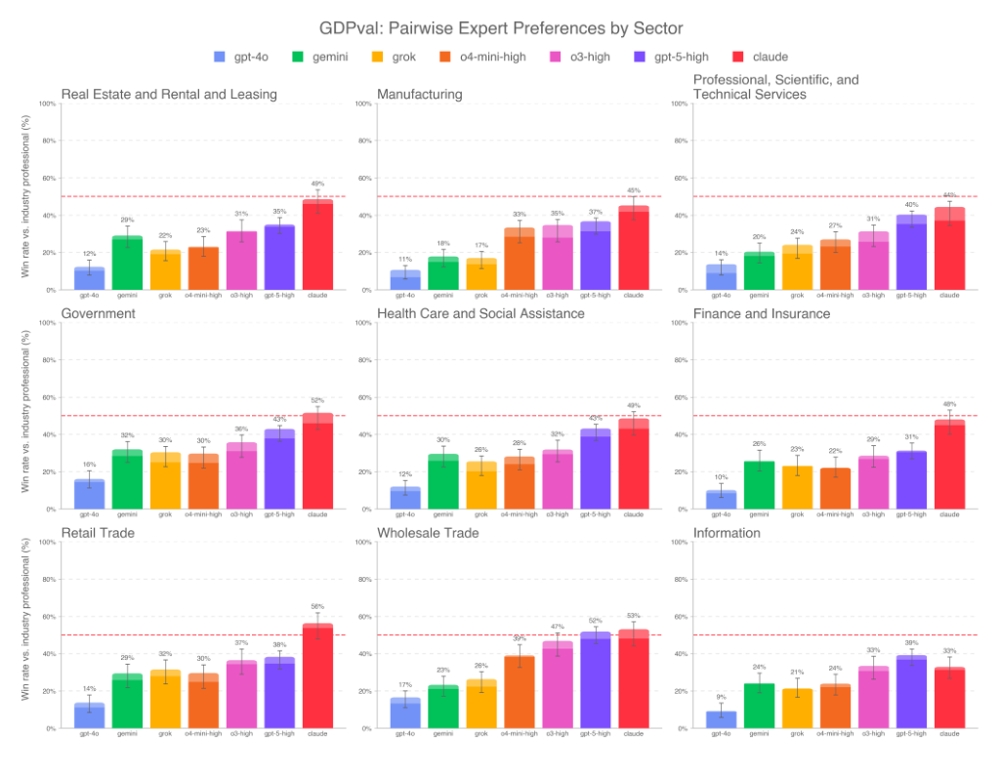
Figure 10: Win rate by sector
A.2.2 WIN RATES BY SECTORA.2.2 分行业胜率
We provide a sector-level breakdown of win rates in fig. 10. Results differ across industries. Some sectors have low win rates for all models, while in others (e.g., Government, Retail Trade, and Wholesale Trade), the strongest models approach parity on GDPval tasks.
我们在 fig. 10 中给出胜率的行业级拆解。结果因行业而异：部分行业对所有模型的胜率都偏低，而在另一些行业（如 Government、Retail Trade、Wholesale Trade），最强模型在 GDPval 任务上已接近与人类持平。
14
14
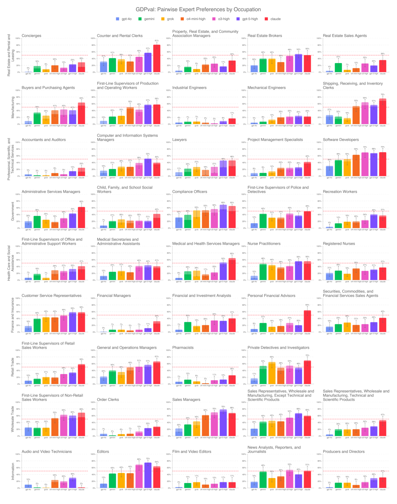
Figure 11: Win rate by occupation
A.2.3 WIN RATES BY OCCUPATIONA.2.3 分职业胜率
We provide a detailed breakdown of win rates by occupation in fig. 11. Results vary: some occu- pations show consistently low win rates across all models, while others display near parity among multiple models.
我们在 fig. 11 中给出分职业的胜率细目。结果差异明显：部分职业在所有模型上胜率持续偏低，另一些职业则有多款模型接近与人类持平。
15
15
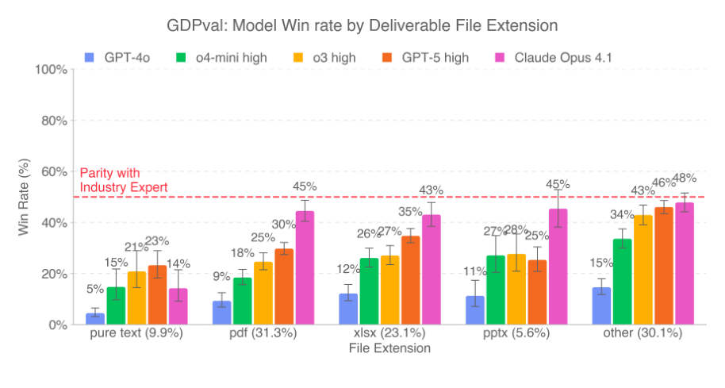
Figure 12: Win rate by deliverable file type
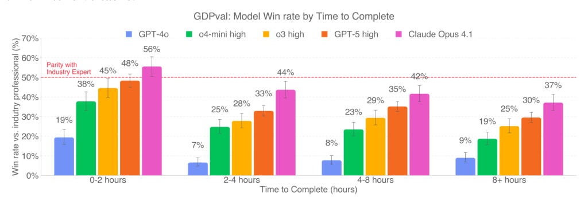
Figure 13: Win rate by time to complete task
A.2.4 WIN RATES BY DELIVERABLEA.2.4 分交付成果类型胜率
We report win rates by deliverable type in fig. 12. Performance varies across formats, with Claude achieving the best results for all deliverables except pure text. GPT-5 high leads for pure text outputs, though overall win rates remain low.
我们在 fig. 12 中报告按交付成果类型划分的胜率。表现因格式而异：Claude 在除纯文本外的所有交付成果上均取得最佳结果；纯文本输出则由 GPT-5 high 领先，不过整体胜率仍然偏低。
A.2.5 WIN RATES BY TIME TO COMPLETEA.2.5 按完成时长划分的胜率
We report win rates by task duration in fig. 13. Win rates are highest for shorter tasks (0–2 hours) and decline steadily as completion time increases. This indicates that models perform best on faster, less time-intensive tasks.
我们在 fig. 13 中报告按任务时长划分的胜率：较短任务（0–2 小时）的胜率最高，且随完成时间增加而稳步下降。这表明模型在耗时更短、强度更低的活动上表现最佳。
A.2.6 ADDITIONAL DETAIL ON MODEL FAILURES ANALYSISA.2.6 模型失败分析补充细节
We took the subset of GPT-5 model failures (tasks where the GPT-5 deliverable lost to the human expert), and then we asked other expert occupational graders to rate these subset samples as:
我们取出 GPT-5 失败任务的子集（GPT-5 交付成果输给人类专家的任务），再请其他职业专家评分者将这些样本评定为：
1. Catastrophic: The model completion would be catastrophic if used in real life because it is harmful or dangerously wrong (e.g., insulting a customer, giving the wrong diagnosis, recommending fraud, or suggesting actions that will cause physical harm). 2. Bad: The completion was bad and not fit for use, but not offensive or dangerous (e.g., rambling nonsense, completely irrelevant, or incoherent answers). 3. Acceptable but subpar: The completion was acceptable (and could be used) but the hu- man produced a stronger response (e.g., model response lacked helpful detail compared to the human). 4. N/A: Disagree with original expert grader; the model completion was better than the human completion.
1. 灾难性：若用于现实将造成灾难，因结果有害或危险地错误（如侮辱客户、给出错误诊断、建议欺诈或建议将致人身伤害的行为）。2. 差：结果糟糕、不可用，但无冒犯性或危险性（如语无伦次的空话、完全跑题或不连贯的回答）。3. 可接受但欠佳：结果可接受（且可用），但人类给出了更优的回答（如模型回答相比人类缺乏有益细节）。4. 不适用：不同意原专家评分者；模型完成结果优于人类。
16
16
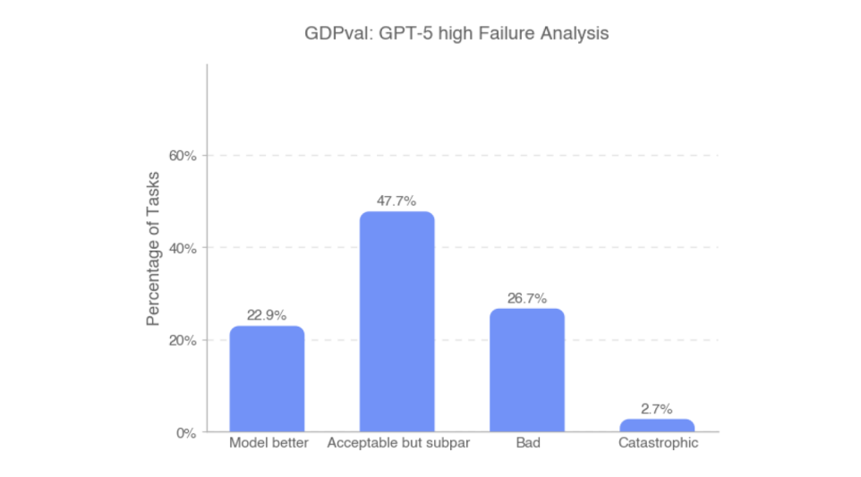
Figure 14: Experts rated GPT-5 model failures by categorized by severity of failure.
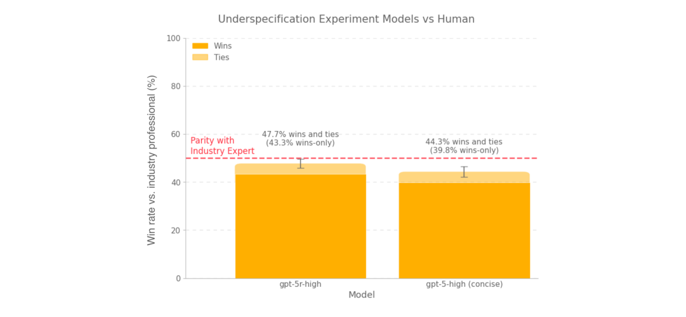
Figure 15: On the underspecified version of GDPval, GPT-5 performed worse as it struggled to figure out requisite context.
The most common categorization of a GPT-5 model failure was “acceptable but subpar.” Another roughly 29% of ratings were for bad or catastrophic (with roughly 3% of failures marked as catas- trophic). The 23% of ratings for “model better” roughly corresponds to the level of inter-rater agreement we observed in fig. 4b.
GPT-5 失败中最常见的类别是“可接受但欠佳”；另有约 29% 的评分落在“差”或“灾难性”（约 3% 的失败被标记为灾难性）。评“模型更优”者占 23%，与我们在 fig. 4b 中观察到的评分者间一致率水平大致相当。
A.2.7 UNDER-CONTEXTUALIZED GDPVALA.2.7 语境不足的 GDPVAL
To assess how models handle task ambiguity, we created a modified version of GDPval with de- liberately lower-context prompts. These shorter prompts omitted additional context such as where to locate specific data within reference files, how to approach the problem, or detailed formatting expectations for the final deliverable; the models had to “figure it out.” On average, these revised prompts were 42% the length (by token count) of the original prompts.
为考察模型应对任务模糊性的能力，我们构建了刻意降低上下文信息的 GDPval 修改版：更短的提示省略了诸如参考文件中数据的具体位置、解题思路、对最终交付成果的详细格式期望等补充信息，模型必须自行“摸索”。按 token 计，修订提示的平均长度为原始提示的 42%。
This setting helped measure an aspect of professional knowledge work previously unaddressed in our evaluation: navigating ambiguity by figuring out what to work on and where to get the necessary inputs. We collected and graded GPT-5 completions with expert human graders and found the model’s performance was worse on under-specified prompts. In particular, the models struggled to figure out context.
这一设置测量了此前评测未曾覆盖的专业知识工作维度：通过摸索“该做什么、去哪里获取必要输入”来应对模糊性。我们收集 GPT-5 的完成结果并交由专家人类评分者评分，发现模型在低规定性提示上表现更差，尤其难以自行摸索出上下文。
As a note: this experiment was run on an earlier version of the GDPval gold subset, and therefore the observed win rates do not match those in the main text of the paper.
需要说明：本实验运行于 GDPval 金子集的较早版本，故观察到的胜率与论文正文数值不一致。
17
17
A.3 ADDITIONAL DETAIL ON PROMPT-TUNINGA.3 提示词调优补充细节
Here is the prompt we give the agent to elicit capabilities (lightly edited to remove some specific details of our scaffolding setup).
以下是我们为激发模型能力而给智能体的提示词（经轻度编辑，隐去脚手架设置的若干具体细节）。
Prompt
提示词
We performed best-of-N sampling by prompting a GPT-5 grader with the prompt, reference files, and deliverable files for four different submissions, then asking it to pick the best.
我们执行 best-of-N 采样：将提示词、参考文件与四个不同提交的交付成果一并交给 GPT-5 评分器，请其选出最佳者。
18
18
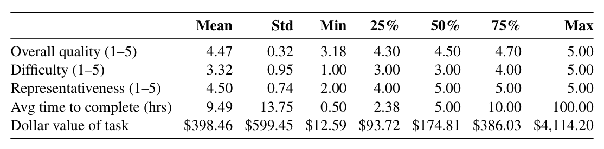
Table 3: Summary statistics for GDPval gold subset tasks
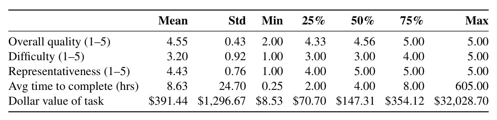
Table 4: Summary statistics for GDPval full set tasks
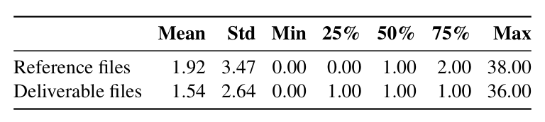
Table 5: File counts for GDPval gold set tasks
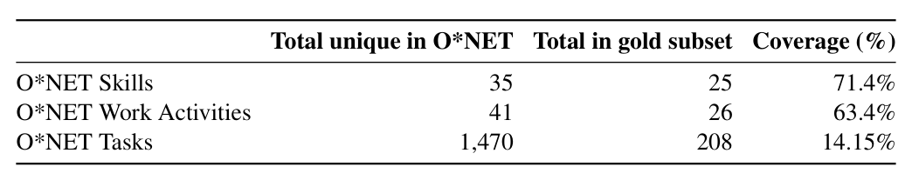
Table 6: O*NET Tasks, Skills, and Work Activities coverage in gold set
A.4 ADDITIONAL TASK CHARACTERISTICSA.4 任务特征补充
Table 3
| Mean | Std | Min | 25% | 50% | 75% | Max | |
|---|---|---|---|---|---|---|---|
| Overall quality (1–5) | 4.47 | 0.32 | 3.18 | 4.30 | 4.50 | 4.70 | 5.00 |
| Difficulty (1–5) | 3.32 | 0.95 | 1.00 | 3.00 | 3.00 | 4.00 | 5.00 |
| Representativeness (1–5) | 4.50 | 0.74 | 2.00 | 4.00 | 5.00 | 5.00 | 5.00 |
| Avg time to complete (hrs) | 9.49 | 13.75 | 0.50 | 2.38 | 5.00 | 10.00 | 100.00 |
| Dollar value of task | $398.46 | $599.45 | $12.59 | $93.72 | $174.81 | $386.03 | $4,114.20 |
Table 4
| Mean | Std | Min | 25% | 50% | 75% | Max | |
|---|---|---|---|---|---|---|---|
| Overall quality (1–5) | 4.55 | 0.43 | 2.00 | 4.33 | 4.56 | 5.00 | 5.00 |
| Difficulty (1–5) | 3.20 | 0.92 | 1.00 | 3.00 | 3.00 | 4.00 | 5.00 |
| Representativeness (1–5) | 4.43 | 0.76 | 1.00 | 4.00 | 5.00 | 5.00 | 5.00 |
| Avg time to complete (hrs) | 8.63 | 24.70 | 0.25 | 2.00 | 4.00 | 8.00 | 605.00 |
| Dollar value of task | $391.44 | $1,296.67 | $8.53 | $70.70 | $147.31 | $354.12 | $32,028.70 |
A.4.1 FILES AND ATTACHMENTSA.4.1 文件与附件
Many traditional evaluations rely on text-in/text-out task formats. GDPval tasks incorporate a broad range of real-world file types (such as spreadsheets, documents, presentations, images, audio, video, and specialized formats like CAD). 67.7% of tasks required interaction with at least one reference file.
许多传统评测依赖“文本进、文本出”的任务格式，GDPval 任务则纳入了广泛的现实文件类型（如电子表格、文档、演示文稿、图像、音频、视频及 CAD 等专用格式）。67.7% 的任务需要与至少一个参考文件交互。
Table 5
| Mean | Std | Min | 25% | 50% | 75% | Max | |
|---|---|---|---|---|---|---|---|
| Reference files | 1.92 | 3.47 | 0.00 | 0.00 | 1.00 | 2.00 | 38.00 |
| Deliverable files | 1.54 | 2.64 | 0.00 | 1.00 | 1.00 | 1.00 | 36.00 |
A.4.2 O*NET TASKS, SKILLS, AND WORK ACTIVITIESA.4.2 O*NET 任务、技能与工作活动
To ensure broad occupational representativeness, we analyzed the O*NET tasks, skills, and general work activities represented by GDPval tasks. The dataset covered 208 unique O*NET tasks, 25 occupational skills, and 26 work activities.
为确保广泛的职业代表性，我们分析了 GDPval 任务所对应的 O*NET 任务、技能与一般工作活动：数据集覆盖 208 项不同的 O*NET 任务、25 项职业技能与 26 项工作活动。
Most GDPval tasks involve multiple O*NET tasks, skills, and work activities.
多数 GDPval 任务同时涉及多个 O*NET 任务、技能与工作活动。
Table 6
| Total | unique in O*NET Total in | gold subset | Coverage (%) |
|---|---|---|---|
| O*NET Skills | 35 | 25 | 71.4% |
| O*NET Work Activities | 41 | 26 | 63.4% |
| O*NET Tasks | 1,470 | 208 | 14.15% |
19
19
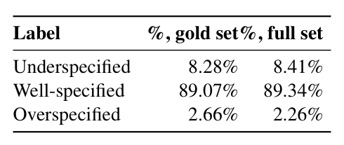
Table 7: Task specification scores
A.4.3 TASK SPECIFICATIONA.4.3 任务规定性
Occupational experts conducting human grading rated the specificity of instructions provided in each prompt. 89.07% of tasks were rated as well-specified, indicating the instructions closely matched real-world expectations of clarity and detail.
执行人工评分的职业专家对每条提示中指令的明确程度评分：89.07% 的任务被评为规定良好，说明指令在清晰度与细节上高度贴合现实预期。
Table 7
| Label | %, gold set%, full set |
|---|---|
| Underspecified | 8.28% 8.41% |
| Well-specified | 89.07% 89.34% |
| Overspecified | 2.66% 2.26% |
A.4.4 TASK REPRESENTATIVENESSA.4.4 任务代表性
Professional Services Qualification: Technology and intellectual property attorney with partner
专业服务资质：科技与知识产权律师，曾任纽约及加州多家 AmLaw 100 律师事务所合伙人
roles at multiple AmLaw 100 firms in New York and California, and 15+ years of experience advising clients on emerging technologies, advertising, antitrust, and cross-border disputes and transactions. Quote: Legal tasks included details that felt true to practice, like ambiguous fact patterns, disclo- sure of relevant legal considerations along with non-legal business goals, and realistic reference documents.
从业 15 年以上，为客户就新兴技术、广告、反垄断及跨境争议与交易提供咨询。引述：这些法律任务包含贴近执业实际的细节，如模糊的事实模式、法律考量与非法律商业目标交织，以及逼真的参考文件。
Healthcare Qualification: Nursing professional with 18+ years of expertise in emergency medicine, renal management, care coordination, and healthcare operations. Skilled in quality assurance, case management, and professional education. Quote: These tasks captured the complexity of the role, requiring not only a keen ear for the physician’s words, but also careful attention to clinical accuracy and professional formatting.
医疗健康资质：护理专业人士，在急诊医学、肾脏管理、护理协调与医疗运营方面拥有 18 年以上经验，擅长质量保证、病例管理与专业教育。引述：这些任务抓住了该岗位的复杂性——既要敏锐听清医生的话，又须严格关注临床准确性与专业格式。
Retail Trade Qualification: Strategic retail executive with 15 years of experience growing prestige
零售贸易资质：拥有 15 年经验的战略零售高管，深耕高端
and niche beauty brands through national account leadership, $1B+ P&L ownership, and data- driven omnichannel strategies. Quote: These tasks mirrored the work I performed regularly, including developing revenue fore- casts, conducting competitive analysis, building executive-level presentations, and driving strate- gic initiatives for key retail partners within a global organization.
与小众美妆品牌的增长，曾主导全国客户管理、10 亿美元以上损益及数据驱动的全渠道战略。引述：这些任务与我的日常工作如出一辙——制定收入预测、竞争分析、高管级演示文稿，以及为全球组织中的关键零售伙伴推进战略举措。
Finance Qualification: Fintech and Wall Street leader with 20+ years of experience in wealth man-
金融资质：金融科技与华尔街背景的管理者，在财富管理
agement, asset management, and capital markets across global institutions and startups. Quote: They reflected real-world scenarios that were nuanced and individualized, situations that only someone with years of experience in the field would fully comprehend. The language and details used in the tasks were directly drawn from actual industry practice, making them authentic and grounded in real-world application.
、资产管理与资本市场领域拥有 20 余年经验，横跨全球机构与初创公司。引述：这些任务呈现了细致入微、因人而异的现实场景，唯有多年的行业积淀方能完全理解；其语言与细节直接取自真实的行业实践，真实可信、扎根于现实应用。
Wholesale Trade Qualification: National Accounts Sales Manager for US, China, and Sweden
批发贸易资质：负责美国、中国与瑞典市场的全国客户销售经理
based brands/factories with over 25 years of experience selling to US based retailers. Quote: All the tasks were in fact based upon real world tasks with back-up reference files and real-world data.
的品牌/工厂，拥有 25 年以上面向美国零售商的销售经验。引述：所有任务实际上都取材于真实世界任务，配有参考文件与真实数据。
Manufacturing Qualification: Lead Industrial Engineer with 5+ years of experience managing
制造业资质：主任工业工程师，拥有 5 年以上的管理经验
large-scale projects and leading teams of 10+ engineers in industrial operations. Quote: The redesign tasks stood out as especially true to real-world practice because they in- cluded specific design components and blocks, along with detailed drawings that incorporated precise measurements. They emphasized practical considerations such as visibility and optimiz- ing walking distances to improve overall productivity, exactly the kind of detail-oriented focus that reflects actual engineering and operational priorities.
曾管理大型项目并在工业运营中带领 10 人以上工程师团队。引述：重新设计类任务尤其贴近真实实践——它们包含具体的设计组件与模块，以及标注精确尺寸的详细图纸；还强调可见性、优化行走距离以提升整体生产率等实际考量。正是这种对细节的专注，映射了真实的工程与运营优先级。
Government Qualification: Executive leader with 15+ years working at strategic and operational
政府资质：在政府与非营利部门的住房、人类服务及劳动力市场项目中，于战略与执行
levels in government and non-profit sectors in housing, human service and labor market pro- grams. Quote: Many of the tasks demand the integration of multiple sources of information, nuanced decision-making, and tailored the work to varied audiences we serve in the workplace.
层面工作 15 年以上的高管。引述：许多任务要求整合多种信息来源、做出细致的决策，并针对我们在职场中服务的不同受众定制工作成果。
20
20
Real Estate and Leasing Qualification: Seasoned commercial real estate broker with 10 years of
房地产与租赁资质：资深商业地产经纪人，拥有 10 年
experience in investment sales, leasing, and managing real estate offices and agents. Quote: The tasks capture the dynamics and expertise unique to specific sectors and settings. Information Qualification: An experienced senior journalist and content leader with over 20 years
在投资销售、租赁及管理地产办公室与经纪人方面的经验。引述：这些任务抓住了特定行业与场景独有的动态与专业知识。信息资质：经验丰富的高级记者与内容负责人，拥有 20 年以上
in top-tier media, global corporations, and high-growth startups. Quote: Most importantly, the tasks are anchored in real-world challenges and workplace goals. They push past obstacles, achieve workplace goals, and deliver real-world solutions and products.
顶级媒体、全球公司与高增长初创公司的从业经历。引述：最重要的是，这些任务锚定于真实世界的挑战与职场目标——推动人越过障碍、达成工作目标，交付切实可用的解决方案与产品。
Additional Detail about Expert Qualifications Less than 10% of applicants were selected to con- tribute tasks to our full set. The industry experts also brought occupational diversity, representing different company sizes, locations, and sub-specialties. Each occupation had a minimum of 5 quali- fied professionals.
关于专家资质的补充：入选全集任务贡献者的申请者不足 10%。行业专家兼具职业多样性，覆盖不同公司规模、地域与细分专业；每个职业至少有 5 名合格专业人士。
Experts for each occupation were required to have previous experience in that specific occupation and sector based on the O*NET occupation definitions (U.S. Bureau of Labor Statistics, 2025a).
依据 O*NET 职业定义 (U.S. Bureau of Labor Statistics, 2025a)，各职业的专家均须在该特定职业与行业具有既往从业经验。
A.5 FURTHER DETAIL ON TASK QUALITY CONTROLA.5 任务质量控制补充细节
A.5.1 MODEL-IN-THE-LOOP TASK REVIEWA.5.1 模型在环任务审查
We used OpenAI models to automatically screen each task submission across a variety of criteria and flag possible errors or omissions including: ensuring the task is relevant to the selected O*NET occupation, verifying the request involved tasks performed primarily on a computer, flagging if the task complexity was too simple (e.g., if the task seemed like 5 minutes of work instead of a longer- term piece of work), and indicating if there were no deliverable and reference files attached.
我们使用 OpenAI 模型按多项标准自动筛查每份任务提交并标记可能的错误或遗漏，包括：任务是否与所选 O*NET 职业相关、请求是否涉及主要由计算机完成的工作、任务复杂度是否过低（例如看似只需 5 分钟而非长期工作），以及是否未附带交付成果与参考文件。
Because models can make mistakes, experts were instructed to take model feedback as a suggestion rather than a direction. Experts retained final responsibility for task accuracy and completeness; the model did not autonomously alter tasks.
鉴于模型可能出错，专家被告知应把模型反馈当作建议而非指令。任务的准确性与完整性由专家负最终责任，模型不会自主改动任务。
A.5.2 HUMAN EXPERT REVIEWERSA.5.2 人类专家审查者
Human reviewers conducted multiple rounds of review on each task. Reviewers were primarily sourced from the original expert pool based on demonstrated excellence in task creation. Initially, our researchers manually reviewed all tasks to identify experts who produced consistently high- quality tasks; these individuals were trained and promoted to reviewers. The most skilled reviewers were further trained to become lead reviewers, responsible for identifying, mentoring, and promoting additional qualified reviewers from within the expert pool. Throughout the review process, the research team regularly performed quality-control checks on tasks signed off by reviewers, ensuring ongoing alignment and quality standards.
人类审查者对每项任务进行多轮审查。审查者主要从原专家池中依任务创建的出色表现选拔：研究团队先人工审查全部任务，找出持续产出高质量任务者，经培训后晋升为审查者；其中最优秀者进一步受训成为首席审查者，负责从专家池中识别、指导并晋升更多合格审查者。整个审查过程中，研究团队定期对审查者签核的任务抽检质量，以保证标准持续对齐。
A.5.3 ITERATIVE REVIEW PROCESSA.5.3 迭代审查流程
The iterative review process included at least the following 3 stages:
迭代审查流程至少包含以下三个阶段：
1. Generalist initial review: A generalist reviewer confirmed the task adhered to project requirements. 2. Occupation-specific expert review: An occupation-specific reviewer assessed the repre- sentativeness of the task for the occupation, and confirmed that the task was possible for another member of the occupation to complete with the provided context. 3. Final iterative reviewer feedback loop: A third expert reviewer provided iterative feed- back and worked with experts until the task met our rigorous quality standards.
1. 通才初审：通才审查者确认任务符合项目要求。2. 职业专属专家审查：职业专属审查者评估任务对该职业的代表性，并确认在给定上下文下该职业的其他成员可以完成。3. 最终迭代反馈环：第三位专家审查者给出迭代反馈，与专家协作，直至任务达到严格的质量标准。
A.6 AUTOMATED GRADER DETAILSA.6 自动评分器细节
A.6.1 AUTOMATED GRADER CONSENSUS METRICSA.6.1 自动评分器一致性指标
To measure automated grader performance, we measured the agreement rate between scores given by the automated grader vs. human expert graders for the same sample. We also compared grading agreement between human experts who had graded the same sample.
为衡量自动评分器的性能，我们测量自动评分器与人类专家评分者对同一样本评分的一致率，并比较对同一样本评分的人类专家之间的评分一致性。
21
21
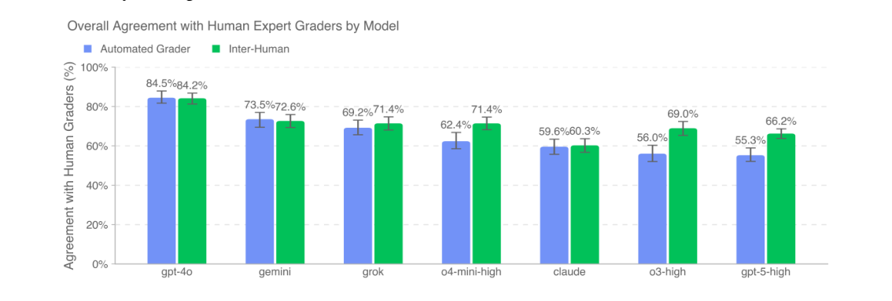
Figure 16: Average human-automated grader agreement is most closely aligned with human inter- rater agreement for non-OpenAI models. Both agreement metrics are highest for less capable mod- els, as they can be more frequently distinguished from human deliverables and are less likely to be chosen.
Human-automated grader Agreement. For a given sample s, let the human score H and au- tomated grader score A take values in {0, 0.5, 1}, where 1 indicates preference for the model de- liverable, 0 indicates preference for the human deliverable, and 0.5 indicates a tie. The agreement between human and automated grader is defined as
人类—自动评分器一致性：对给定样本 s，设人类评分 H 与自动评分器评分 A 取值于 {0, 0.5, 1}，其中 1 表示偏好模型交付成果、0 表示偏好人类交付成果、0.5 表示平局。人类与自动评分器的一致性定义为
s = E
s = E
AHA
AHA
1 −|H −A|
1 −|H −A|
.
.
The model-level human–automated grader agreement is the mean of AHA
模型层面的人类—自动评分器一致性，即该模型全部样本上 AHA 的均值。
s over all samples for that model.
s 取遍该模型的全部样本。
Human Inter-Rater Agreement. For a given sample s, let the human scores H1 and H2 take values in p ∈{0, 0.5, 1}. We measure human inter-rater agreement as the following expectation over two randomly sampled human ratings
人类评分者间一致性：对给定样本 s，设人类评分 H1 与 H2 取值于 p ∈{0, 0.5, 1}。我们将其测量为对两个随机抽取的人类评分的如下期望
s = E
s = E
AHH
AHH
1 −|H1 −H2|
1 −|H1 −H2|
.
.
For a given sample, we estimate this quantity by the empirical mean over all pairs of ratings for that sample. The final human inter-rater agreement for a model is the mean of these sample-level scores over all samples with at least two human graders. Existing grader inter-reliability statistics such as Cohen’s kappa, Fleiss’ kappa, and Krippendorff’s alpha are less directly applicable here, since our graders output ordinal scores in {0, 0.5, 1}.
对给定样本，我们以该样本全部评分对的经验均值估计该量；某模型最终的人类评分者间一致性，则是样本级分数在所有拥有至少两位人类评分者的样本上的均值。Cohen’s kappa、Fleiss’ kappa 与 Krippendorff’s alpha 等既有评分者信度统计在此不直接适用，因为我们的评分者输出的是 {0, 0.5, 1} 中的序数分数。
A.6.2 AUTOMATED GRADER CORRELATION RESULTSA.6.2 自动评分器相关性结果
Over three automated grader sweeps on our dataset10, average human-automated grader agreement was 65.7% and human inter-rater agreement was 70.8%. Plots below show 95% confidence intervals obtained by bootstrapping (resampling with replacement the available automated grader scores or human grades for each sample, computing the mean per sample, and averaging across all samples or for the specified model).
在数据集上的三轮自动评分器扫描中10，人类—自动评分器平均一致率为 65.7%，人类评分者间平均一致率为 70.8%。下图给出经自助法（对每个样本的可用自动评分或人类评分做有放回重采样，逐样本计算均值，再对全部样本或指定模型平均）得到的 95% 置信区间。
Our automated grader, based on GPT-5-high, shows lower correlation with human expert graders when assessing outputs from capable OpenAI models. This aligns with empirical evidence that models often favor their own responses Panickssery et al. (2024). Both agreement metrics are highest for less capable models, since their outputs are easier to distinguish from human deliverables and are less likely to be preferred.
基于 GPT-5-high 的自动评分器在评估较强 OpenAI 模型的输出时，与人类专家评分者的相关性较低——这与模型往往偏爱自身回答的经验证据 Panickssery et al. (2024) 相符。两项一致性指标在能力较弱的模型上最高：其输出更易与人类交付成果区分，也更少被偏好。
A.6.3 AUTOMATED GRADER LIMITATIONSA.6.3 自动评分器的局限
In the open-source set we mark 12 out of 220 tasks as ungradable due to limitations of the automated grader.
在开源集合中，受自动评分器能力所限，220 个任务中有 12 个被标记为不可评分。
22
22
1. Internet Access: Tasks which strictly require internet (e.g., tasks that ask agents to find music online and download it) are not possible to grade because the grader does not have internet access.
1. 互联网访问：严格依赖联网的任务（例如要求智能体在线查找并下载音乐）无法评分，因为评分器不能访问互联网。
2. Python: The automated grader operates in a container that only allows for running Python. Because of this, we excluded 3 Software Developers tasks that require running other lan- guages and downloading external dependencies to properly test.
2. Python：自动评分器运行于仅支持 Python 的容器。因此我们排除了 3 个软件开发者任务——它们需要运行其他语言并下载外部依赖才能正确测试。
3. Font Packages Although the automated grader has most metrically-identical fonts (e.g., Liberation Sans instead of Arial), some font packages used in human deliverables still causes certain deliverables to be rendered differently than they would appear on a computer that has these fonts installed.
3. 字体包：自动评分器虽配有大多数度量等价的字体（如以 Liberation Sans 替代 Arial），人类交付成果所用的部分字体包仍会使某些交付成果的渲染效果不同于装有这些字体的计算机。
4. Speech-to-text transcription: The automated grader has limited speech to text function- ality inside the container, and struggles with non-voice sounds.
4. 语音转写：自动评分器在容器内的语音转写能力有限，且难以处理非人声。
A.6.4 AUTOMATED GRADER PACKAGESA.6.4 自动评分器软件包
To ensure the model can process a wide variety of file types in GDPval, the following packages are pre-installed in the base production Docker image. These were also made available to the agent during sampling of OpenAI models.
为确保模型能处理 GDPval 中多样的文件类型，以下软件包预装于基础生产 Docker 镜像中；在 OpenAI 模型采样期间，这些包同样对智能体开放。
scikit-image==0.20.0 folium==0.12.1 wordcloud==1.9.2 faker==8.13.2 fpdf2==2.8.3 soundfile==0.10.2 kerykeion==2.1.16 pdfkit==0.6.1 pycountry==20.7.3 countryinfo==0.1.2 tabulate==0.9.0 shap==0.39.0 pylog==1.1 pyprover==0.5.6 pytesseract==0.3.8 qrcode==7.3 basemap==1.3.9 pygraphviz==1.7 networkx==2.8.8 pyttsx3==2.90 nashpy==0.0.35 docx2txt==0.8 typing-extensions==4.10.0 torch==2.5.1 torchaudio==2.5.1 torchtext==0.18.0 torchvision==0.20.1 PyMuPDF==1.21.1 pdf2image==1.16.3 pyth3==0.7 h5py==3.8.0 tables==3.8.0 rarfile==4.0 odfpy==1.4.1 pymc==4.0.1 jax==0.2.28 pyxlsb==1.0.8 keras==2.6.0 xgboost==1.4.2
scikit-image==0.20.0 folium==0.12.1 wordcloud==1.9.2 faker==8.13.2 fpdf2==2.8.3 soundfile==0.10.2 kerykeion==2.1.16 pdfkit==0.6.1 pycountry==20.7.3 countryinfo==0.1.2 tabulate==0.9.0 shap==0.39.0 pylog==1.1 pyprover==0.5.6 pytesseract==0.3.8 qrcode==7.3 basemap==1.3.9 pygraphviz==1.7 networkx==2.8.8 pyttsx3==2.90 nashpy==0.0.35 docx2txt==0.8 typing-extensions==4.10.0 torch==2.5.1 torchaudio==2.5.1 torchtext==0.18.0 torchvision==0.20.1 PyMuPDF==1.21.1 pdf2image==1.16.3 pyth3==0.7 h5py==3.8.0 tables==3.8.0 rarfile==4.0 odfpy==1.4.1 pymc==4.0.1 jax==0.2.28 pyxlsb==1.0.8 keras==2.6.0 xgboost==1.4.2
jupyter-client==8.6.1 jupyter-core==5.5.1 jupyter-server==2.14.0 jupyterlab==4.1.8 jupyterlab-pygments==0.3.0 jupyterlab-server==2.27.1 aiohttp==3.9.5 hypercorn==0.14.3 notebook==6.5.1 nbclassic==0.4.5 pydantic==1.10.2 fastapi[all]==0.95.2 websockets==10.3 tqdm==4.64.0 matplotlib==3.6.3 matplotlib-venn==0.11.6 numpy==1.24.0 numpy-financial==1.0.0 scipy==1.14.1 pandas==1.5.3 statsmodels==0.13.5 sympy==1.13.1 seaborn==0.11.2 scikit-learn==1.1.3 nltk==3.9.1 plotnine==0.10.1 shapely==1.7.1 fiona==1.9.2 geopandas==0.10.2 ffmpeg-python==0.2.0 pydub==0.25.1 moviepy==1.0.3 opencv-python==4.5.5.62 Pillow==9.1.0 python-docx==0.8.11 python-pptx==0.6.21 openpyxl==3.0.10 xml-python==0.4.3 geopy==2.2.0
jupyter-client==8.6.1 jupyter-core==5.5.1 jupyter-server==2.14.0 jupyterlab==4.1.8 jupyterlab-pygments==0.3.0 jupyterlab-server==2.27.1 aiohttp==3.9.5 hypercorn==0.14.3 notebook==6.5.1 nbclassic==0.4.5 pydantic==1.10.2 fastapi[all]==0.95.2 websockets==10.3 tqdm==4.64.0 matplotlib==3.6.3 matplotlib-venn==0.11.6 numpy==1.24.0 numpy-financial==1.0.0 scipy==1.14.1 pandas==1.5.3 statsmodels==0.13.5 sympy==1.13.1 seaborn==0.11.2 scikit-learn==1.1.3 nltk==3.9.1 plotnine==0.10.1 shapely==1.7.1 fiona==1.9.2 geopandas==0.10.2 ffmpeg-python==0.2.0 pydub==0.25.1 moviepy==1.0.3 opencv-python==4.5.5.62 Pillow==9.1.0 python-docx==0.8.11 python-pptx==0.6.21 openpyxl==3.0.10 xml-python==0.4.3 geopy==2.2.0
23
23
mtcnn==0.1.1 imgkit==1.2.2 chardet==3.0.4 bokeh==2.4.0 tabula==1.0.5 camelot-py==0.10.1 exchange_calendars==3.4 weasyprint==53.3 pronouncing==0.2.0 cryptography==3.4.8 spacy==3.4.4 requests==2.31.0 mne==0.23.4 pyopenssl==21.0.0 snowflake-connector-python==2.7.12 databricks-sql-connector==0.9.1 ddtrace˜=2.8.1 datadog˜=0.49.1 pytest˜=8.2.0 pytest-cov˜=5.0.0 pytest-json-report˜=1.5.0 coverage˜=7.5.1 pytest-asyncio˜=0.23.6 catboost˜=1.2.7 lightgbm˜=4.5.0 imblearn˜=0.0 imbalanced-learn˜=0.12.3 rapidfuzz˜=3.10.1
mtcnn==0.1.1 imgkit==1.2.2 chardet==3.0.4 bokeh==2.4.0 tabula==1.0.5 camelot-py==0.10.1 exchange_calendars==3.4 weasyprint==53.3 pronouncing==0.2.0 cryptography==3.4.8 spacy==3.4.4 requests==2.31.0 mne==0.23.4 pyopenssl==21.0.0 snowflake-connector-python==2.7.12 databricks-sql-connector==0.9.1 ddtrace˜=2.8.1 datadog˜=0.49.1 pytest˜=8.2.0 pytest-cov˜=5.0.0 pytest-json-report˜=1.5.0 coverage˜=7.5.1 pytest-asyncio˜=0.23.6 catboost˜=1.2.7 lightgbm˜=4.5.0 imblearn˜=0.0 imbalanced-learn˜=0.12.3 rapidfuzz˜=3.10.1
loguru==0.5.3 plotly==5.3.0 graphviz==0.17 fuzzywuzzy==0.18.0 pydot==1.4.2 gensim==4.3.1 pypandoc==1.6.3 einops==0.3.2 reportlab==3.6.12 gradio==2.2.15 mutagen==1.45.1 librosa==0.8.1 svglib==1.1.0 gtts==2.2.3 textblob==0.15.3 rasterio==1.3.3 rdflib==6.0.0 rdkit==2024.9.6 biopython==1.84 cairosvg==2.5.2 markdownify==0.9.3 anytree==2.8.0 pdfplumber==0.6.2 trimesh==3.9.29 svgwrite==1.4.1 pdfrw==0.4 pyzbar==0.1.8 dlib==19.24.2
loguru==0.5.3 plotly==5.3.0 graphviz==0.17 fuzzywuzzy==0.18.0 pydot==1.4.2 gensim==4.3.1 pypandoc==1.6.3 einops==0.3.2 reportlab==3.6.12 gradio==2.2.15 mutagen==1.45.1 librosa==0.8.1 svglib==1.1.0 gtts==2.2.3 textblob==0.15.3 rasterio==1.3.3 rdflib==6.0.0 rdkit==2024.9.6 biopython==1.84 cairosvg==2.5.2 markdownify==0.9.3 anytree==2.8.0 pdfplumber==0.6.2 trimesh==3.9.29 svgwrite==1.4.1 pdfrw==0.4 pyzbar==0.1.8 dlib==19.24.2
We also installed the following additional packages, and we tell the model in the prompt it has access to these additional packages:
我们还安装了以下附加软件包，并在提示中告知模型可以使用它们：
pedalboard==0.9.9 pyloudnorm==0.1.1 srt==3.5.3 xlrd==2.0.1
pedalboard==0.9.9 pyloudnorm==0.1.1 srt==3.5.3 xlrd==2.0.1
libreoffice aspose-words==25.8.0 av==11.0.0 cadquery==2.4.0 cadquery-ocp==7.7.0
libreoffice aspose-words==25.8.0 av==11.0.0 cadquery==2.4.0 cadquery-ocp==7.7.0
A.7 FURTHER METHODOLOGICAL DETAILS ON SELECTING OCCUPATIONSA.7 职业遴选方法补充细节
Assigning Occupations to Sectors. We assigned occupations to sectors by using the 2023 BLS National Employment Matrix from U.S. Bureau of Labor Statistics (2025a) to identify the sector with the highest employment for each occupation. This involved filtering to “Line Item” occupa- tions, taking the first two digits of NAICS codes, dropping “total employment” rows, summing 2023 employment, and assigning each occupation to the sector with the largest share of employment.
职业—行业归配：我们使用 U.S. Bureau of Labor Statistics (2025a) 的 2023 年 BLS 全国就业矩阵，为每个职业确定就业人数最多的行业——筛选“Line Item”职业、取 NAICS 代码前两位、剔除“总就业”行、汇总 2023 年就业量，并将每个职业归入就业占比最大的行业。
Detail about O*NET Data Source
O*NET 数据源细节
Occupations in GDPval. We arrived at 831 occupations by filtering to “Detailed” occupations from the May 2024 OEWS national employment and wage statistics U.S. Bureau of Labor Statistics (2025b) to exclude any aggregate employment categories. We dropped “All Other” occupations, which are catch-all categories within a broader group that bundle together occupations that don’t fit into any of the detailed occupations in that group. Dropping “All Other” occupations left us with 761 occupations.
GDPval 中的职业：我们以 2024 年 5 月 OEWS 全国就业与工资统计 U.S. Bureau of Labor Statistics (2025b) 的“Detailed”职业为基础、排除加总就业类别，得到 831 个职业；再剔除“All Other”职业（更大组别内的兜底类别，捆绑了不属于该组任何细分职业者），剩 761 个职业。
Calculation of Total Wages Earned by Occupation. Estimated total wages earned is calculated as total employment * mean annual salary for jobs with annual salaries, and total employment * hourly salary * typical work year of 2080 hours for jobs with only hourly salaries. The determination
职业工资总额的计算：按年薪计酬者取总就业人数 × 平均年薪；仅按时薪计酬者取总就业人数 × 时薪 × 2080 小时的标准工作年。至于按年薪还是时薪的判定
24
24
of which jobs had annual vs. hourly salaries was included in O*NET data. 2080 hours is cited as a “typical work year” by the Bureau of Labor Statistics (BLS), assuming someone works 40 hours per week. This is an imperfect estimate (eg., the BLS acknowledges actors “generally do not work 40 hours per week, year round”) but is the most precise estimate provided by the BLS.
依据包含在 O*NET 数据中。2080 小时被劳工统计局（BLS）引作“标准工作年”，按每周 40 小时计。这一估计并不完美（例如 BLS 承认演员“通常不会全年每周工作 40 小时”），但已是 BLS 提供的最精确估计。
Classifying Occupations as Digital. To classify occupations as predominantly digital, we use a task-based approach. For many occupations, the O*NET database contains task statements and ratings that list all the tasks performed by a worker in an occupation.11 The O*NET data is provided on the 6-digit SOC occupational code level (SOC-6). We map the O*NET SOC-6 occupations and the corresponding tasks to occupations in the OEWS dataset which reports wages at the 4-digit SOC level (“SOC-4”). For each SOC-4 occupation, we classify its tasks as either digital or non-digital using a prompted GPT-4o model that receives both the occupation and task. We then calculate the weighted share of digital tasks for each occupation. Occupations are classified as digital if their digital share exceeds a threshold of 0.60.
职业的数字化归类：我们采用基于任务的方法。O*NET 数据库为许多职业提供任务陈述与评级，列出该职业从业者的全部任务11。O*NET 数据在 6 位 SOC 职业代码（SOC-6）层面提供；我们将其职业与任务映射到按 4 位 SOC 层面（SOC-4）报告工资的 OEWS 职业。对每个 SOC-4 职业，用接收职业与任务信息的提示化 GPT-4o 将任务判定为数字或非数字，再计算数字任务的加权占比；占比超过 0.60 阈值的职业即归类为数字化职业。
To calculate the weights for our weighted task share, we use task ratings data from O*NET surveys, which includes the relevance, frequency, and importance of each task of the occupation.12 We first calculate an Adjusted Task Score for each combination of 6-digit SOC occupation and task. This score is defined as the simple average of the three normalized task ratings: task frequency, task importance, and task relevance. Each rating is normalized relative to the maximum observed rating (e.g. the importance ratings are out of 5).13 If one of these ratings is missing for a task, we impute the value with the mean of that rating across all tasks within the same occupation. For example, if a task lacks a frequency rating, we assign it the average normalized frequency rating of all tasks in the occupation.
加权任务占比的权重取自 O*NET 调查的任务评级数据，含每项任务的相关性、频率与重要性12。我们先为每个“6 位 SOC 职业 × 任务”组合计算调整任务分数（Adjusted Task Score），即三项归一化评级（频率、重要性、相关性）的简单平均；每项评级按观测最大值归一化（如重要性满分为 5）13。若某任务缺失某项评级，则以同职业内所有任务该评级的均值插补——例如缺少频率评级时，赋以该职业全部任务归一化频率评级的平均。
We then aggregate these 6-digit Adjusted Task Scores into 4-digit Adjusted Task Scores (for each set of 4-digit SOC occupations and tasks). We do this by summing the SOC-6 Adjusted Task Scores of SOC-6 occupations within a SOC-4 occupation for each task.14 For example, the SOC-4 oc- cupation Computer Occupations, All Other combines two 6-digit SOC occupations (Information Security Engineers and Penetration Testers) which have one task in common: “Identify security sys- tem weaknesses, using penetration tests.” This task has two SOC-6 Adjusted Task Scores which are added together to create the SOC-4 Adjusted Task Score.
随后把 6 位调整任务分数聚合为 4 位调整任务分数（对每组“4 位 SOC 职业 × 任务”）：对每项任务，将一个 SOC-4 职业内各 SOC-6 职业的调整任务分数求和14。例如 SOC-4 职业 Computer Occupations, All Other 含两个 SOC-6 职业（Information Security Engineers 与 Penetration Testers），共享任务“使用渗透测试识别安全系统弱点”，该任务的两个 SOC-6 分数相加即得 SOC-4 分数。
Next, we calculate the Weighted Task Share for each combination of 4-digit SOC occupation and task. The Weighted Task Share is the Adjusted Task Score of the occupation-task pair divided by the sum of Adjusted Task Scores of that occupation. For each occupation, the sum of Weighted Task Share across all its tasks is equal to one. The Weighted Task Share gives us a measure of the relative significance of each task for a given occupation. These Weighted Task Shares are the weights used to calculate the weighted share of digital tasks for each occupation.
接着为每个“4 位 SOC 职业 × 任务”组合计算加权任务占比：即该职业—任务对的调整任务分数除以该职业全部调整任务分数之和。每个职业所有任务的加权任务占比之和为 1，它刻画了每项任务对该职业的相对重要性；这些占比正是计算各职业数字任务加权占比所用的权重。
Handling Missing Data.
缺失数据的处理。
1. Missing Task Statements. Some occupations in OEWS lacked associated task statements or ratings. Forty-seven of these were broad “All Other” categories without component tasks 15; twelve others were split into finer sub-occupations in O*NET 29.0 (as of August 2025).
1. 缺失任务陈述：部分 OEWS 职业缺少关联的任务陈述或评级。其中 47 个为没有组件任务的宽泛“All Other”类别15；另有 12 个在 O*NET 29.0（截至 2025 年 8 月）中被拆分为更细的子职业。
25
25
For the latter, we incorporated the full set of component tasks from their sub-occupations in O*NET 29.0. The exact reconciliation of how we mapped these 12 occupations is below:
对后者，我们纳入其 O*NET 29.0 子职业的全部组件任务。这 12 个职业的映射关系如下：
(a) Tour and Travel Guides: This SOC Code is broken out into two occupations: Tour
(a) Tour and Travel Guides：该 SOC 代码拆分为两个职业：Tour
Guides and Escorts and “Travel Guides”. We added the tasks from both occupations. (b) Miscellaneous Construction and Related Workers: This SOC Code is broken out
Guides and Escorts 与“Travel Guides”，我们合并了两者的任务。(b) Miscellaneous Construction and Related Workers：该 SOC 代码拆分
into three occupations: “Segmental Pavers”, “Weatherization Installers and Techni- cians”, and “Construction and Related Workers, All Other”. We added all of the tasks from “Segmental Pavers” and “Weatherization Installers.” “Construction and Related Workers, All Other” is a general occupation category without component tasks. (c) Teaching Assistants: This SOC Code is broken out into three occupations: Teach-
为三个职业：“Segmental Pavers”、“Weatherization Installers and Technicians”与“Construction and Related Workers, All Other”。我们纳入“Segmental Pavers”与“Weatherization Installers”的全部任务；“Construction and Related Workers, All Other”为无组件任务的通用类别。(c) Teaching Assistants：该 SOC 代码拆分为三个职业：Teach-
ing Assistants, Preschool, Elementary, Middle, and Secondary School, Except Spe- cial Education, Teaching Assistants, Special Education, and Teaching Assistants, All Other. We added the tasks from Teaching Assistants, Preschool, Elementary, Middle, and Secondary School, Except Special Education, and Teaching Assistants, Special Education. Teaching Assistants, All Other is a general occupation category without component tasks. (d) Buyers and Purchasing Agents: This SOC Code is broken out into three occupa- tions: Buyers and Purchasing Agents, Farm Products, Wholesale and Retail Buyers, Except Farm Products, and Purchasing Agents, Except Wholesale, Retail, and Farm Products. We added the tasks from the three occupations. (e) Substance Abuse, Behavioral Disorder, and Mental Health Counselors: This SOC Code is broken out into two occupations: Substance Abuse and Behavioral Dis- order Counselors and Mental Health Counselors. We added the tasks from both occu- pations. (f) Clinical Laboratory Technologists and Technicians: This SOC Code is broken out into six occupations: Medical and Clinical Laboratory Technologists, Cytogenetic Technologists, Cytotechnologists, Histotechnologists, Medical and Clinical Labora- tory Technicians, and Histology Technicians. We added the tasks from all these occu- pations. (g) Special Education Teachers, Kindergarten and Elementary School: This SOC Code is broken out into two occupations: Special Education Teachers, Kindergarten and Special Education Teachers, Elementary School. We added the tasks from both occupations. (h) Home Health and Personal Care Aides: This SOC Code is broken out into two occupations: Home Health Aides and Personal Care Aides. We added the tasks from both occupations. (i) Property Appraisers and Assessors: This SOC Code is broken out into two oc- cupations: Appraisers and Assessors of Real Estate and Appraisers of Personal and Business Property. We added the tasks from both occupations. (j) Miscellaneous Assemblers and Fabricators: This SOC Code is broken out into two occupations: Assemblers and Fabricators, All Other and Team Assemblers. We match to Team Assemblers since Assemblers and Fabricators, All Other is a general occupation category without component tasks. (k) Electrical, Electronic, and Electromechanical Assemblers, Except Coil Winders,
ing Assistants, Preschool, Elementary, Middle, and Secondary School, Except Special Education、Teaching Assistants, Special Education 与 Teaching Assistants, All Other。我们纳入前两者的任务；Teaching Assistants, All Other 为无组件任务的通用类别。(d) Buyers and Purchasing Agents：拆分为 Buyers and Purchasing Agents, Farm Products、Wholesale and Retail Buyers, Except Farm Products 与 Purchasing Agents, Except Wholesale, Retail, and Farm Products 三个职业，我们纳入三者的任务。(e) Substance Abuse, Behavioral Disorder, and Mental Health Counselors：拆分为 Substance Abuse and Behavioral Disorder Counselors 与 Mental Health Counselors，两者任务均纳入。(f) Clinical Laboratory Technologists and Technicians：拆分为 Medical and Clinical Laboratory Technologists、Cytogenetic Technologists、Cytotechnologists、Histotechnologists、Medical and Clinical Laboratory Technicians 与 Histology Technicians 六个职业，任务全部纳入。(g) Special Education Teachers, Kindergarten and Elementary School：拆分为 Special Education Teachers, Kindergarten 与 Special Education Teachers, Elementary School，两者任务均纳入。(h) Home Health and Personal Care Aides：拆分为 Home Health Aides 与 Personal Care Aides，两者任务均纳入。(i) Property Appraisers and Assessors：拆分为 Appraisers and Assessors of Real Estate 与 Appraisers of Personal and Business Property，两者任务均纳入。(j) Miscellane... [truncated]
Tapers, and Finishers: This SOC Code is broken out into two occupations: Electri- cal and Electronic Equipment Assemblers and Electromechanical Equipment Assem- blers. We added the tasks from both occupations.
Tapers, and Finishers：该 SOC 代码拆分为 Electrical and Electronic Equipment Assemblers 与 Electromechanical Equipment Assemblers 两个职业，两者任务均纳入。
26
26
(l) First-Line Supervisors of Transportation and Material Moving Workers, Except
(l) First-Line Supervisors of Transportation and Material Moving Workers, Except
Aircraft Cargo Handling Supervisors: This SOC Code is broken out into four oc- cupations: First-Line Supervisors of Helpers, Laborers, and Material Movers, Hand, First-Line Supervisors of Material-Moving Machine and Vehicle Operators, First-Line Supervisors of Passenger Attendants, and First-Line Supervisors of Transportation Workers, All Other. We added the tasks from First-Line Supervisors of Helpers, Laborers, and Material Movers, Hand, First-Line Supervisors of Material-Moving Machine and Vehicle Operators, and First-Line Supervisors of Passenger Attendants. First-Line Supervisors of Transportation Workers, All Other is a general occupation category without component tasks. 2. Missing Task Ratings. There are 36 SOC-6 occupations which do not have any task rating in O*NET 28.3 or 29.0. These correspond to 34 SOC-4 occupations.16 Among these, 2 SOC-4 occupations (Data Scientists and Web and Digital Interface Designers) have task ratings for some of the component SOC-6 occupations which allow us to compute the Ad- justed and Weighted Task Share measures. For the rest of the 32 SOC-4 occupations that have no O*NET task ratings, we cannot compute the Adjusted or Weighted Task Share measure. Instead, we proxy the Weighted Task Share as follows: for each combination of 4-digit SOC occupation and task, we calculate the number of times the task appears (i.e., task frequency) for the occupation and divide by the sum of task frequency of all tasks of that occupation. For example, the 4-digit SOC occupation “Special Education Teachers, Kindergarten and Elementary School” combines two 6-digit SOC occupations (Special Ed- ucation Teachers, Elementary School and Special Education Teachers, Kindergarten) has 43 unique tasks. Among these 17 tasks appear twice. Thus, the sum of task frequency across 43 tasks is 60. For each task that appears once, the proxy Weighted Task Share is 1/60 = 0.0017, and for each task that appears twice, the proxy Weighted Task Share is 2/60 = 0.0033.
Aircraft Cargo Handling Supervisors：该 SOC 代码拆分为 First-Line Supervisors of Helpers, Laborers, and Material Movers, Hand、First-Line Supervisors of Material-Moving Machine and Vehicle Operators、First-Line Supervisors of Passenger Attendants 与 First-Line Supervisors of Transportation Workers, All Other 四个职业。我们纳入前三个职业的任务；最后一个为无组件任务的通用类别。2. 缺失任务评级：36 个 SOC-6 职业在 O*NET 28.3 与 29.0 中均无任务评级，对应 34 个 SOC-4 职业16。其中 2 个 SOC-4 职业（Data Scientists 与 Web and Digital Interface Designers）的部分组件 SOC-6 职业有任务评级，尚可计算调整任务分数与加权任务占比；其余 32 个无 O*NET 任务评级的 SOC-4 职业无法计算这两个量。作为替代，我们如此代理加权任务占比：对每个“4 位 SOC 职业 × 任务”组合，以该任务在该职业中的出现次数（任务频率）除以其全部任务的频率之和。例如“Special Education Teachers, Kindergarten and Elementary School”由两个 SOC-6 职业合并而成，共 43 项不同任务，其中 17 项出现两次，频率总和为 60：出现一次者代理加权任务占比为 1/60 = 0.0017，出现两次者为…… [truncated]
A.7.1 VALIDATING THE DIGITAL TASKS MEASUREA.7.1 数字任务度量的验证
We benchmark our “knowledge work” classification method against the task-content framework of Acemoglu & Autor (2011).
我们将“知识工作”分类方法与 Acemoglu & Autor (2011) 的任务内容框架进行对照检验。
The framework in Acemoglu & Autor (2011) is based on the U.S. Department of Labor’s O*NET survey, which collects data on the activities, work “content”, and abilities required for each occupa- tion. The framework aggregates these measures into five scores:
Acemoglu & Autor (2011) 的框架基于美国劳工部的 O*NET 调查——该调查收集各职业所需的活动、工作“内容”与能力数据——并将其聚合为五个分数：
1. Non-routine cognitive: Analytical. 2. Non-routine cognitive: Interpersonal. 3. Routine cognitive. 4. Routine manual. 5. Non-routine manual physical.
1. 非例行认知：分析性。2. 非例行认知：人际性。3. 例行认知。4. 例行手工。5. 非例行手工体能。
Each score is computed as a composite measure of select O*NET “Importance” scales. For example, the “Non-routine cognitive: Analytical” score for each occupation is computed by summing the (normalized) values of the “Analyzing data/information” work activity, the “Thinking creatively” work activity, and the “Interpreting information for others” work activity. A high numerical value for an occupation for a given score indicates that the occupation relies heavily on that type of work.
每个分数由选定的 O*NET“重要性”量表复合计算。例如某职业的“非例行认知：分析性”分数，由“分析数据/信息”“创造性思考”与“为他人解读信息”三项工作活动的（归一化）取值求和而得；某职业在给定分数上的数值越高，说明其越依赖此类工作。
27
27
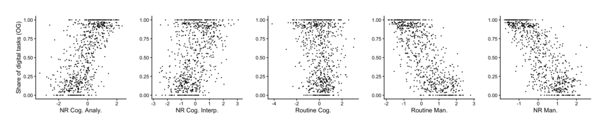
Figure 17: Distribution of occupations and task contents
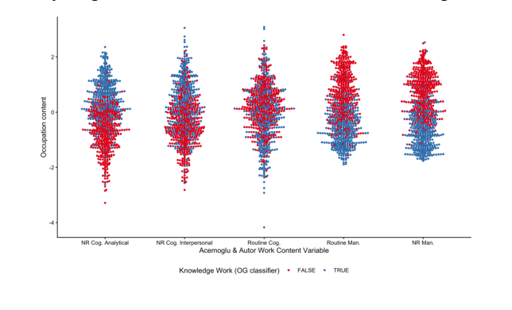
Figure 18: Scatterplot of digital tasks and task contents
We compute the Acemoglu & Autor (2011) scores for each occupation and then compare them with our measures of knowledge work (that is, the share of digital tasks and a binary “knowledge work” indicator for each occupation).
我们为每个职业计算 Acemoglu & Autor (2011) 分数，再与其对比我们的知识工作度量——即每个职业的数字任务占比与二元“知识工作”指标。
In our first set of results, we compare each Acemoglu & Autor (2011) task-content score with the share of digital tasks in an occupation. The patterns are clear: occupations with higher digital-task shares score systematically higher on the non-routine cognitive dimensions and lower on the manual dimensions. In other words, the more an occupation relies on digital tasks, the more it resembles cognitive, non-routine work.
第一组结果中，我们将每个 Acemoglu & Autor (2011) 任务内容分数与职业的数字任务占比对比。模式十分清晰：数字任务占比更高的职业，在非例行认知维度上系统性得分更高、在手工维度上更低。换言之，一个职业越依赖数字任务，就越接近认知性、非例行的劳动。
In our second set of results, we look at the relationship between the Acemoglu & Autor (2011) scores and our binary measure of “knowledge work.” In the following figure, we plot each occupation’s value for each score, and color occupations by the paper’s knowledge-work classification: blue for occupations identified as knowledge work and red for all others. The pattern is again clear– knowledge-work occupations cluster at the top of the non-routine cognitive distributions and at the bottom of the routine and manual distributions. Taken together, these results suggest that our digital- task classification is closely aligned with the economic literature on cognitive/manual work.
第二组结果考察 Acemoglu & Autor (2011) 分数与二元“知识工作”度量的关系。下图画出每个职业在各分数上的取值，并按本文的知识工作分类着色：蓝色为知识工作职业，红色为其余。模式同样清晰——知识工作职业聚集在非例行认知分布的顶端、例行与手工分布的底端。综合来看，这些结果表明我们的数字任务分类与认知/手工劳动的经济学文献高度一致。
28
28

Table 1: Sectors, their value added as a percentage of U.S. GDP (Q2 2024), with representative top occupations and total compensation in billions (USD).
29
29